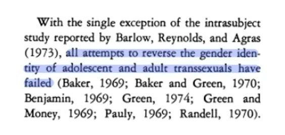
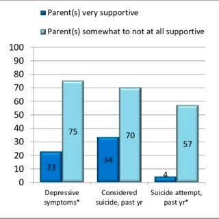
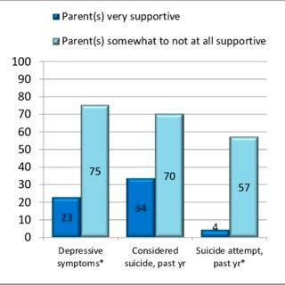
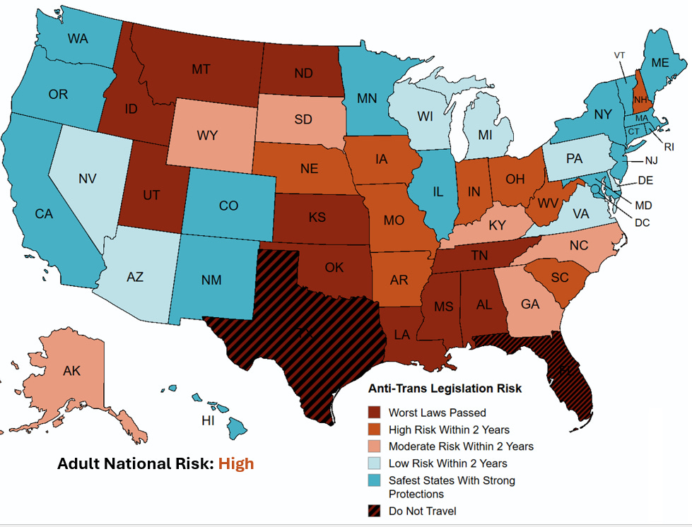
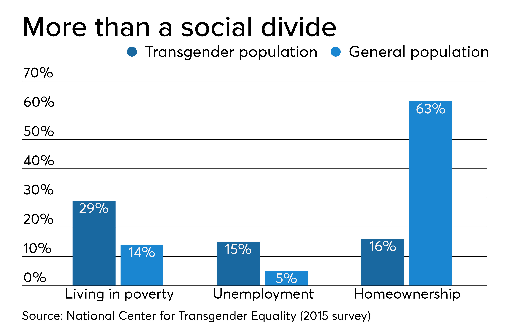
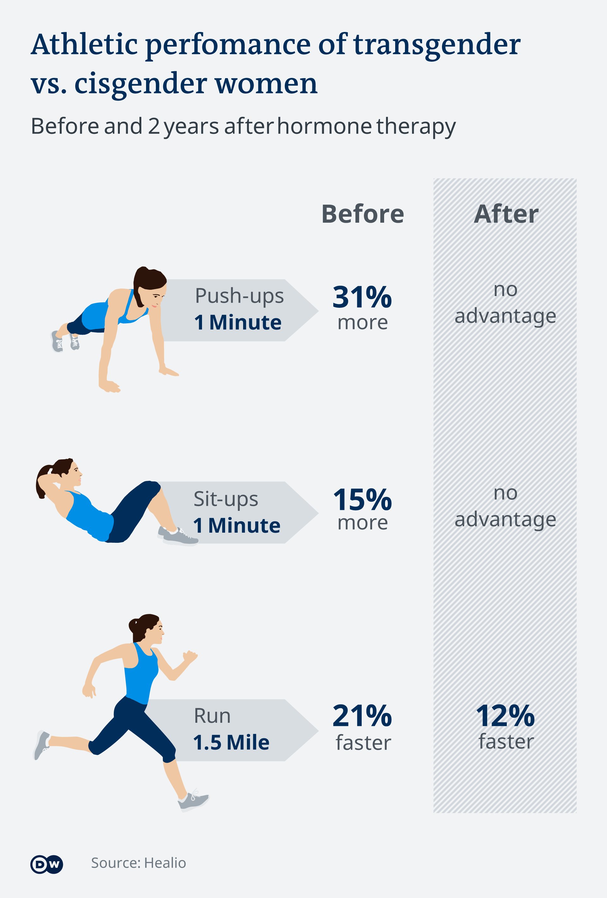
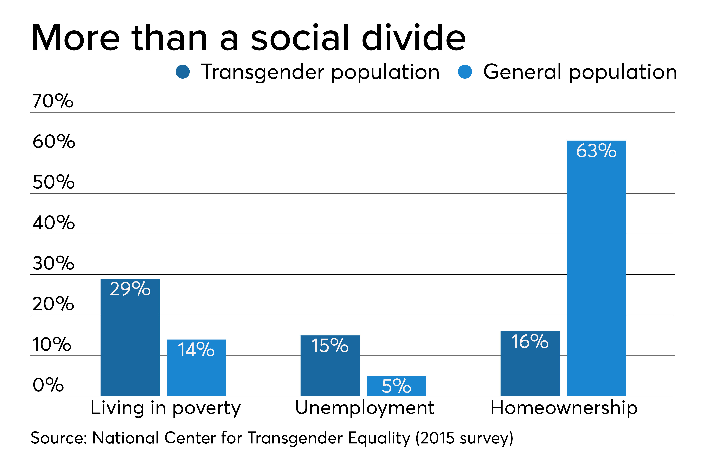
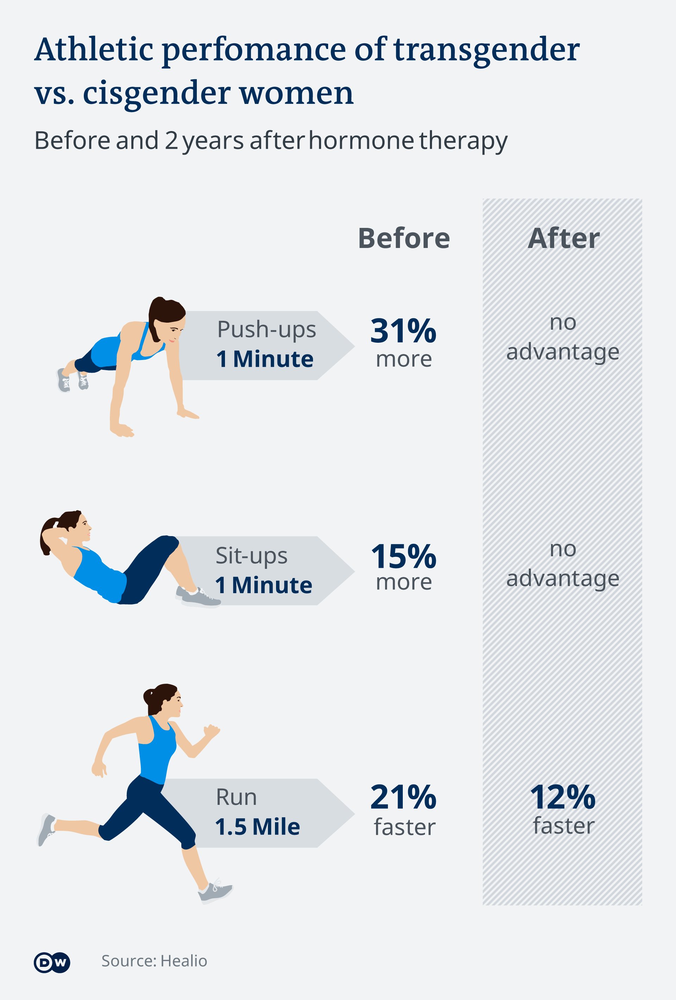
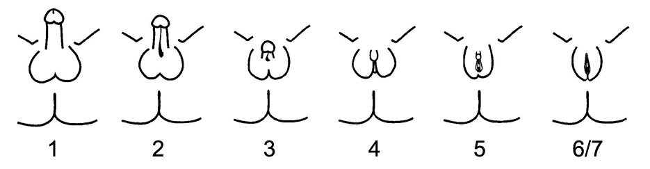

Etiologically speaking, a trans person is a human whose gonadal and
cerebral sexual differentiations are incongruent (or put simply, in
opposite directions, mismatch) due to underlying genetic, endocrine,
epigenetic (through gene expression and epigentic regulation where
some genes are deactivated while others are activated, enzyme
function, regulation and interaction with stressors), pre natal brain
development, fetal exposure factors and neurological factors during
specific gestational windows (along with 10 other factors mentioned
later on, it's a biological mosaic with a complex interplay of said
elements). [For example: A different sexual differentiation of the
brain as a result of changes in the DNA sequence of the estrogen
receptors ERs and androgen receptor AR genes.], along with other
factors,
it can even be hereditary
(Bocklandt, S., et al. 2012; Garcia-Couto, E., et al. 2017; Menni, S.,
et al. 2018; Savic, I., et al. 2019; Diamond, L. M., et al. 2016).
Which causes Gender dysphoria: the phenotypic expression of multiple
underlying factors which results in permanent structural changes to
the affected person’s neural architecture; This is not a disorder of
emotion, behavior or thought, therefore, not a mental illness, it's
rather a neurobiological mismatch. it leads to severe distress in the
same way phantom pain isn’t a mental disorder but has a psychological
manifestation or aspect, but are not purely psychological disorders.
[There is universal consensus that 'transness' itself isn't a disorder
but it's the depressive symptoms as a result of the incongruence,
rather than from an intrinsic disorder] but a natural variation of
human biology. It is a neurobiological mosaic.
The ICD-11 classifies gender incongruence as a sexual medical
condition (17). The following references are for neuroscience research studies that
demonstrate these findings:
(Bao & Swaab 2011; Guillamon et al., 2016; Savic & Arver, 2011;
Gizewski, et al. 2008; Rametti, et al. 2010; Swaab, Wolff & Bao. 2021;
Berglund. 2008; Luders. 2009; Zubiaurre-Elorza, et al. 2012; Burke, et
al. 2014; Luders, et al. 2012; Zhou, et al. 1995;
Murad, et al. 2010; Garcia-Falgueras & Swaab. 2008; Kranz, et al. 2012; Smith, et al.
2018; Hare, et al. 2008; Fernandez, et al. 2022; Polderman, et al.
2018; William Byne 2006; Saraswat 2015; Diamond 2013; Kurth, et al.
2022; Clemens, et al. 2020; Spizzirri, et al. 2018; Gooren L 2006;
Garcia-Falgueras 2008; Kruijver et al. 2000; Kruijver, F. P., et al.
2011; Smith, et al. 2015; Katherine J. Wu, 2016; Foreman, et al. 2018;
Boucher & Chinnah. 2020... More in the
references section).


Watch lecture snippet of 'Neurobiology of transsexuality by Prof. Robert Sapolsky' on '15. Human Sexual Behavior I', Stanford University, Department of Biology, 2011. & Watch 'Healthcare of the transgender patient by Dr. William J Powers, D.O. AAHIVMS'.
The following are (medical articles) overviews of the origin of gender dysphoria:
Rosa Fernández, et al. 2022 & Boucher & Chinnah 2020 & Swaab et al. 2021
Gender dysphoria is a complex condition that is often difficult to understand for those who do not experience it. Gender dysphoria mirrors the experience of phantom limb pain (a condition where the brain retains the representation of a missing limb), where the brain senses a mismatch between the body and the brain (the brain intrinsically senses that the body should have certain features, dysphoria is a deeply distressing condition rooted in the brain's representation of the body ), which causes intense distress and pain that impacts every aspect of life. The two conditions share some underlying neural mechanisms as well, in the somatosensory cortex, this distress is linked to brain regions responsible for self-perception, body-image and body schema. Such as the insula, SLF, IPL and other parietal regions for example. They also share similar treatment methods, such as mirror therapy which creates the illusion that the missing limb is present, and virtual reality therapy where the person can interact with their missing limb in a virtual environment created using a computer. Transitioning helps to align the brain and the body similarly. It's more about an intense misalignment (hence why phantom pain is a perfect analogy) rather than a mere preference or desire.
Put simply, genetics and hormones build the map. The map is the body schema encoded in specific brain networks (the insula, premotor cortex, and temporoparietal junction). Dysphoria is when that map doesn't match the terrain. And that, is the etiology in a nutshell. When this happens, they get neuropsychological pain due to mismatched information (the brain's body schema conflicts with the sensory and perceptual input of the body) which leads to distress through alienation, depersonalization and dissocation thereby activating emotional and stress-related networks (such as the HPA axis) which involve sensorimotor incongruence (two conflicting realities both stemming from prenatally established biology) and somatic distress, the chronic stress resulting from this can lead to stress-induced maladaptive neuroplastic changes (gray matter reductions in the hippocampus) that reinforce gender dysphoria by altering brain structure and it often develops into central sensitization and hyperalgesia then psychosomatic pain with the addition of headaches, stomach problems, and muscle tension due to the linkage of the brain's distress with physical sensation. Which is a self-reinforcing cycle through hebbian plasticity. Not just emotional discomfort. This chronic stress also causes elevated cortisol and amygdala hyperactivity/hippocampal shrinkage if left untreated. It is later exacerbated by pubertal hormones via androgen/estrogen-driven secondary sex characteristics. And this is not because being trans is pathological, but because the brain receives conflicting sensory and perceptual input. The body feels “wrong” or alien. Not due to a pathology of identity or confusion, but because of a biological incongruence between the body and brain (prenatal biology → neural wiring → sensorimotor incongruence → pubertal exacerbation → stress → neuroplasticity → somatic symptoms).
To clarify on how the brain intrinsically senses that it should have certain characteristics or when we metaphorically refer to a "body-map" (which is an actual neuroscience topic called a body schema): "Findings suggest that the neuroanatomical signature of transgenderism is related to brain areas processing the perception of self and body ownership" from Burke, et al. 2017
All of the genetic, postmortem and in-vivo scanning observations support the neurobiological theory about the origin of gender dysphoria. it is the sizes of brain structures (including ones that are not plastic), the neuron numbers, the molecular composition, functions, and connectivity of brain structures that determine our gender identity. It is a lifelong, congenital, condition that is not caused by any psychological or social factors. (Bao & Swaab, 2011; Guillamon, et al. 2016; Savic & Arver, 2011; Turban et al. 2020; Garcia-Falgueras & Swaab 2008; Polderman, et al. 2018). Handbook of Clinical Neurology (2021), Vol. 181, Chapter 31, p. 427–443.
"Attempts to change gender identity external forces have proved unsuccessful ... Although environment may play a role in gender expression, there are no data to suggest that gender identity is manipulated by external forces. ... However, there is evidence for a significant endogenous biologic component underlying gender identity ... The findings were not the result of sex hormone alteration in adulthood but rather established in early brain development ... Current models attribute gender identity etiology to endogenous biology along with prenatal androgen exposure." Korpaisarn & Safer, 2019
Medical transition is the only biologically rational treatment: It resolves the root cause (incongruence) rather than masking symptoms.
The medical explanation for being transgender is primarily rooted in biological and neurological differences that develop during early life, particularly in the womb. It is not caused by social or environmental influences. While biological factors play a primary role, societal and environmental influences, such as exposure to rigid gender norms or supportive versus hostile environments, can shape how someone understands and expresses their gender identity. Meaning it affects gender expression and how one would cope with dysphoria. The social enviornment affects behaviors, preferences and desires but it doesn't alter the innate sense of self.
41% of trans people attempt suicide by age 30 (Dhejne et al. 2014),
this is an alarming statistic that illustrates the immense challenges
faced by this community [for the sake of comparison, the rate of
mortality for cancer is 32%
], however, this rate is
reduced by more than half
with hormone therapy, and can be reduced to less than 5% with the
support of family and friends (Denis R. Lafontaine, A. Ashley Cross,
Michael J. W. Schmidt, et al. 2015). [Having a supportive family
reduced suicide rates by 57% and access to legal documentation
reflecting ones gender reduces suicide rate by 44%, Parental support
is associated with a 93% reduction in suicide attempts (Bauer, et al.
2015; PULSE 2012). The ability to transition, to use their actual
name, social support all drastically reduce suicide attempts and
thoughts (Rusell 2018; Moody & Smith 2013; Bauer 2015). Supporting
trans people is an ethical imperative. Denying care or support is not
a neutral act; it actively contributes to harm.
Being attacked on the basis of gender, restriction of teens to access
bathrooms of their gender, discrimination, homelessness and violence
all increase suicidality (Herman, et al. 2019; Barboza, et al. 2016).
After controlling for minority stress (discrimination) and access to
healthcare (a proxy for poverty, and a measure of the ability to
transition), trans people have a mental health quality of life similar
to that of the general population (Ainsworth & Spiegel 2010; Nobili,
et al. 2018).
Scientists have tried to treat gender dysphoria by affirming the sex
assigned at birth to no avail (Gelder & Marks, 1969; Greenson, 1964;
Cohen-Kettenis & Kuiper, 1984; Pauly, 1965) as it doesn’t address the
underlying cause: the incongruence mentioned above. Such treatment is
no longer considered ethical and you cannot make trans people
cisgender. They‘ve even tried electroconvulsive therapy &
psychosurgery and failed at treating gender dysphoria (Diamond & Joel,
2010; Jorgensen & Drescher, 2012). Other forms of therapy is involved
in the process of transitioning but none of them are intended to make
trans people accept their AGAB (assigned gender at birth). Decades of
research confirm that transition is the only effective treatment (APA,
2021; WPATH SOC8).

Excerpt from Journal of applied behavior analysis, University of
Florida, 1977.
"Gender identity conversion efforts (GICE) are detrimental to mental
health and should be avoided in children, adolescents, and adults."
Arch Sex Behav 50, 7–16 (2021).
APA RESOLUTION on Gender Identity Change Efforts
Gender dysphoria worsens over time if not treated (Dhejne, C., Van
Vlerken, R. H., Heylens, M., & Arcelus, J. 2016; Nobili, A., et al.
2018; Majid, M., et al. 2019), so neuroplasticity cannot get rid of
gender dysphoria as it cannot fundamentally alter deeply embedded
structures related to sex differentiation, it‘s limited by the genetic
makeup of the person and a couple dozen other factors, early
development is irrevesible, brain structures and processes established
during critical development periods (in utero) are deeply embedded
(fixed). Neuroplasticity allows the brain to adapt and rewire in
response to experiences, learning, or damage, it has its limitations.
Not all areas of the brain exhibit the same degree of plasticity. In
this instance, the structures and processes involved in sex
differentiation are set during critical developmental periods, in
utero rather post natally. These changes are not easily modified later
by neuroplasticity. Certain aspects of brain development are
relatively permanent once formed —such as differences in white matter
pathways or gray matter volumes—. Just as neuroplasticity doesn't
"cure" phantom pain, as it involves a deeper, more ingrained
neurological basis that adaptation alone can't modify. This is also
why socialization doesn't cause or fix it, socialization affects the
brain through neuroplasticity, the above applies. Speaking of
genes, genetic variations in trans people were associated with brain
development and sex hormone signaling. (Hare, at al. 2008; Bentz, et
al. 2008)
Recent research has identified a significant genetic component in the etiology of gender dysphoria. (Carruth, et al. 2002; Ramirez, et al. 2021; Fernández, et al. 2020; Bentz, et al. 2008 ; Fernández, et al. 2014; Ujike, et al. 2009; Henningsson, et al. 2005; Shen, et al. 2015; Murray, et al. 2009; McCarthy, et al. 2009; McCarthy, et al. 2015; Forger, et al. 2016; Abel, et al. 2011; Yang, et al. 2017; Boucher, et al. 2020; Ristori, et al. 2020; Ramírez, et al. 2021; Ngun, et al. 2010)
There is clear evidence that hormone therapy is safe and effective in improving the physical and mental health of transgender adults (Colizzi et al., 2014). Hormone therapy reverses cerebral patterns associated with gender dysphoria to the baseline of cisgender controls (Kilpatrick, et al. 2019). Transition is safe and has little long-term side effects, it increases general mental health, reduces psychopathology and psychiatric disorders and symptoms. In a systemic review of 28 studies involving 1100 people: 80% of trans people who undergo HRT and gender affirming surgery experienced benefits at the “significant improvement” level, not just “some improvement”. There is a robust international consensus that transition improves well-being and reduces suicide rates (Cornell University et al. 2018; Pachankis, et al. 2019; Austin, et al. 2019; Toomey, et al. 2019). About <1%-2.2% of Trans people regret transition ( Bustos, et al. 2021 (review of 28 studies); C Dhejne et al, 2014; Wiepjes, et al. 2018; Brik 2020; Davies, et al. 2019; McNeil, et al. 2012; USTS 2015; Yolanda L S Smith, et al. 2005; M Landén, et al. 1998; Pfäfflin 1991; Krege, et al. 2001; Cuypere, et al. 2006; Danker, et al. 2018; Herman, et al. 2019; Olson 2022; De vries 2014; Durwood et al., 2017). For context, the regret rate for Lasik eye surgery is about 5%. While regret after primary knee and hip replacement surgery was either 17.1% or 4.8% The vast majority (85%) of detransitions are driven by external pressures [such as from family] and not regret (Turban, et al. 2021; VandenBussche, 2021 ). The regret rate for gender-affirming procedures performed between January 2016 and July 2021 was 0.3%.. There is also Association Between Gender-Affirming Surgeries and Mental Health Outcomes, 2021. Sometimes, gender affirming Mastectomy has no regret at all. In a 1972–2015 Dutch review of 95% of trans people in the netherlands, trans women regret rate was only 0.6% and trans men regret rate was 0.3%.

 

There is no evidence that one's postnatal social environment plays a
crucial role in the development of gender identity or sexual
orientation. Rather, the environment affects the gender expression and
not the identity. The findings suggest that lifetime and childhood
exposure to gender identity conversion efforts are associated with
adverse mental health outcomes (Turban et al., 2020), you cannot make
trans people cis (Turban & Ehrensaft 2018; Heiden-Rootes K, et al.
2021; Turban, et al. 2019), it‘s always been unsuccessful and harmful.
The environment affects gender expression and not identity.
Being trans is not a phase for children, their gender identity is
very stable, and it certainly has nothing to do with sexual orientation
(Kaltiala-Heino, et al. 2018; Thompson, et al. 2022; NHS 2020; Crocq
2021). Prenatal and pubertal sex hormones seem to permanently affect
human behaviour and, in addition, heritability studies have
demonstrated a role of genetic components. (Ristori, et al. 2020).
Sexual orientation has nothing to do with the etiology of gender
dysphoria (Stefanie Smith, et al. 2015; De Vries et al. 2015; Olson et
al. 2016; Reisner et al. 2017; Durwood et al. 2020; Wallien &
Cohen-Kettenis 2010; Steensma et al. 2008). They have different
etiology, mechanism and dimensions. different neural pathways,
distinct biological processes that operate independently. Different
genetic components, different prenatal hormone mechanism affecting
different regions at different timeframes. Different neurobiology and
neurochemistry. Different developmental pathways. Both are innate and
immutable. Not influenced by social environment or psychology in
etiology. Neither does psychology or the environment, they only affect
the experience of gender dysphoria, for better or for worse. This is
the way their brain is wired. However, gender expression can be as
it's influenced by society and culture. These 3 are distinct and
independent dimensions of identity, they don't have to be in harmony
and this is the beauty of natural biological variety. It's congenital,
they're just born that way.
Gender dysphoria is fundamentally distinct from Body dysmorphia.
Gender dysphoria is a biological condition rooted in atypical cerebral
sex differentiation (the brain's development does not align with the
body's misassigned sex) because of prenatal endocrine, genetic and
epigenetic, neurodevelopmental factors, this is not simply a matter of
perception but rooted in measurable neuroanatomical and neurochemical
differences. While body dysmorphia dysmorphia is excessive focus and
overinflated "flaw" perception of the body (involves hyperactivity in
the regions implicated in obsessive-compulsive behaviors and distorted
self-image processing ). The distress in body dysmorphia stems from
distorted perceptions or imagined flaws, whereas the distress in
gender dysphoria stems from a genuine biological incongruence. This is
why gender affirming care cannot be compared to liposuction or
cosmetic plastic surgery (typically elective). Instead, they are
medically-necessary reconstructive procedures.
Gender identity is innate and biologically based → Affirming care is
medically necessary.
TLDR; Gender dysphoria = Biological mismatch (brain/body sex
differentiation). Body dysmorphia = Perceptual distortion (no
underlying mismatch).
Read "Gender-affirming care is preventative care" By Department of
Epidemiology, University of Washington School of Public Health.
Neurobiological research suggests that both gender dysphoria and sexual orientation are influenced by brain structures and functions. But it doesn't mean that they have the same differences, studies have identified distinct patterns in regions such as the hypothalamus and amygdala. The two phenomena are, however, fundamentally & biologically unalike, homosexual orientation was found to be associated with less pronounced cerebral sex dimorphism. Gender dysphoria also involves cerebral networks mediating self–body perception. Structural and functional differences of hypothalamic nuclei and other brain areas differ in relation to sexual identity and sexual orientation, indicating that these traits develop independently. This may be a result of differing hormone sensitivities and/or separate critical periods, although this remains to be explored. Subtle variations in these networks can have significant implications, highlighting the importance of considering the broader context of brain function rather than focusing solely on isolated regions. Sexual orientation is biologically conferred in the first trimester of pregnancy. Gender identity is biologically conferred during the middle trimester of pregnancy. They follow different developmental paths during gestation with their own unique neural correlates, these traits emerge through distinct biological processes & are biologically conferred at different stages. However, multiple layers of evidence confirm that sexual orientation and gender identity are as biological, innate and immutable as the other traits conferred during that critical time in gestation. ( Frigerio, et al. 2021; Hernandez, et al.; Manzouri 2019; Bruke, et al. 2017; Molerio, et al. 2015; O'Hanlan, et al. 2018 ; Swaab, et al. 2021 ; Roselli 2019 )
From neuroanatomist Simon Levay in the April 2011 issue of Frontiers of Neuroendocrinology, “The book on social influences [on sexual orientation and gender identity] is not closed, so much as it is blank”. From neuroscientist D. F. Swaab in Functional Neurology: “There is no proof that social environment after birth has an effect on gender identity or sexual orientation”. The American Psychiatric Association removed homosexuality from a psychopathological designation in 1973. In the 2013 DSM-5, the American Psychiatric Association affirmed that “gender nonconformity is not in itself a mental disorder, but a discontent with the assigned gender and the apparent gender of their bodies”. Since then, sexual orientation and gender identity have gradually become protected as statuses that should not endure discrimination or lack of accommodation by state and federal laws. Social environments interact with neurobiological foundations, but they do not "determine" identity, the role of prenatal hormones and neurodevelopmental processes in determining gender identity is distinct from general personality traits and broader social behaviors which may be more influenced by social factors. The biological processes discussed in medical literature involve hormonal surges, genetics, and neurodevelopmental mechanisms that occur long before socialization can play a role.
It's impossible to get groomed into being transgender. As established the social enviornment has no affect, sexual orientation is a whole different dimension than gender dysphoria and it's a neurobiological condition that is innate and lifelong. Moreover, most of them have known they're trans from an extremely young age, just as cis people do. Check this out.
Gender dysphoria has a very high (97.6%) rate of persistence that has been consistently observed. See this also. And "Our findings suggest that GD typically manifests very early in childhood and can persist for many years until gender transition." from Garcia et al. 2020
The absence of strictly "male" or "female" brains doesn't negate
gender dysphoria as a neurobiological condition. And that is not what
is being said here, brain sexual differentiation is mosiac. But not in
a way it affects us cognitively or affecting how analytical/emotional
we think nor does it determine decision-making functions, that is
patriarchal and ascientific (has been debunked by contemporary
neuroscience), it's important to differentiate what's being talked
about in this piece; Instead, it highlights the complexity of gender
and the brain, where patterns, not absolutes, shape our
understanding of gender identity and its strong biological
underpinnings. it emphasizes that gender identity is more complex than
binary biological categories. As it is a spectrum, like biological sex
is. This predetermined and stored sense of self is rooted in the
brain's structure and function, shaped by a complex interplay of
genetics, prenatal hormones, and neurodevelopmental factors. This DOES
NOT confirm or verify that social norms as rigid natural sets of
behaviors. In fact, brain sex differences have nothing to do with that
at all. Core identity is biological and emerges from brain development
and is likely established before birth due to hormonal, genetic, and
neurological factors.
It reveals the complexity of brain
development, where the brain's structure and function are influenced
by multiple factors, including genetics, hormones, and womb
environment. Rather than being rigidly divided into "male" and
"female," brains exist on a spectrum, with overlapping characteristics
that do not fit neatly into binary categories. Despite the absence of
rigidly male or female brains, gender dysphoria has strong
neurobiological and chemical foundations. Sex differences in the brain
are well-documented, a lot of them are present at birth.. (see
references), particularly in regions that
regulate emotion, cognition, and behavior. Additionally, neurochemical
differences in serotonin, dopamine, and other neurotransmitter systems
have been observed in individuals with gender dysphoria, which could
contribute to the distress they experience when their gender identity
does not align with their assigned sex.
Autism and gender dysphoria; It's complicated. There's this idea that autism is overrepresented among people with gender dysphoria and vice versa. The backstory of this is from studies where they gave people with gender dysphoria autism screening instruments, called the social responsiveness scale or the autism quotient, that do not establish a diagnosis. And there is other research that shows if you have other anxiety or depression, as many as 80% of kids who have anxiety or depression but don't have autism will score in the clinical range on these scales. Those scales are just not very specific, it didn't really establish that all of those kids had autism because medical professionals knew that they had a high rate of anxiety and depression so it wasn't surprising that a lot of them were scoring positive. There was also the dutch study where they looked at the rate of them screening positive for prepubertal kids and it was pretty much the same as the general population, but when they looked at it in the teens that's when all of a sudden they were more kids with autism but you don't develop autism in your teens. But you develop anxiety and depression in your teens because that's usually when these kids for the first time are experiencing a lot of bullying and stigma etc. The issue with a lot of those studies was the instrument and methodology. The other side of studies looked at kids with autism and they used CBCL (Child Behavior Checklist) that stated "Do you feel like you're the other gender? Zero, never, one, sometimes, or two, often." and they combined the ones and twos and called that gender dysphoria, but people with autism have slightly more rigid thinking and so for instance there are adolescent patients with autism who had a stereotypical interest like an autistic boy who likes knitting, he'd be like "yeah, sometimes I feel like a girl". But that's not a kid with gender dysphoria. This is why the scientific community was not buying them. Then that devolved into popular press headlines being like "these trans people just have autism" and that autism gives you these repetitive, restrictive interests and then they're just obsessed with gender and that's what makes them trans. However, comprehensive reviews of the literature have found no solid evidence to support this theory. While both autism and gender dysphoria each affect around 1% of the population, and some people may have both, they aren't causally linked, this does not imply causation. So there are gonna be kids who have both. And it is a unique thing because their experience of the world, and gender, and social norms, and their rigid thinkingdoes require a special approach for supporting them in their gender. And so the latest WPATH guidelines actually recommend that anyone working with trans youth does have training and experience with autism to be able to support those types of kids. [ Dr. Jack Turban, MD. - The Checkup with Doctor Mike, DO. ]
On nature versus nurture; David Reimer was a boy who suffered a botched circumcision when he was six months old which resulted in the loss of his penis. In the early 1960s, John Money, a sexologist & psychologist, convinced his parents to raise him as a girl, believing that gender identity could be assigned and that environmental factors were more influential than biological ones. His parents were convinced and David underwent surgery to appear female and was named Brenda. Money and his team were convinced that with 'proper' socialization, 'Brenda' would accept her new identity. However, despite the intervention, David experienced significant distress as he grew up, feeling a misalignment between his gender identity and the gender he was forced to be —essentially the opposite of being trans. He ended up transitioning back to living as a male in his teenage years. Throughout his childhood, Reimer was not informed about his male biology. He experienced significant distress due to this. In his early twenties he attempted suicide twice and at the age of thirty-eight, Reimer committed suicide by firearm. David's situation underscores that gender dysphoria is not a product of social upbringing but rather an innate biological phenomenon. You cannot make trans people cis and vice versa. This teaches us that conversion therapy cannot work; You cannot force someone to be either cis or trans. Read more about this case here
The story of David illustrates that informed consent (for adults) is a
more humane and effective approach to addressing gender dysphoria than
medical gatekeeping, If someone takes HRT and feels that it aligns
their physical appearance with their gender identity (i.e. the
incongruence between the brain and the body is lessened; As
dysphoria/euphoria are two sides of the same coin), then this would be
the strongest evidence of gender dysphoria. It's a biological
condition but it isn't necessarily visible with the naked eye, it
manifests psychologically. That's why gender dysphoria is in the
DSM-V-TR. Not because it's a mental disorder, but because we can only
reliably screen and diagnose it based on its psychological symptoms
Psychological suffering is the measurable symptom, basically. There's
no universal experience of gender dysphoria, variability is
undeniable.
This is most likely because the biological variables that contribute
to gender dysphoria in etiology are, well, variables. This is the
evidence aligned answer. For example, neutoanatomical variability,
genetic factors, pre-natal hormonal influences and their timing (which
is critical), neurochemical differences, ERα methylation, AR
Sensitivity Polymorphisms, neurotransmitter response to sex hormones,
somatosensory cortex organization, estrobolome variability, immune
system microglial priming with neuroinflammation, and so much more. It
is a convergence of dozens of biological processes that differ per
individual. Biological variability underlies the diversity of trans
experiences. And this is why informed consent is a better way to
approach it and why rigid diagnoses fail. No test is better than lived
experience. not until we can literally look into the brain
anatomically and physiologically in a way that is detailed enough to
be used diagnostically. And our instruments and understanding of the
brain are simply not advanced enough for that. We barely know how the
brain works.
The fact that someone would immediately detransition if they were not
truly transgender is illustrated by David Reimer's case. Because when
there is no biological incongruence between the sex differentiation
and that of the gonads and therefore the body, taking HRT would induce
such incongruence, which prompts them to stop. And adults are sentient
enough to recognize that, and when they do, which they often do, they
simply stop. Best case study is David Reimer, we need to learn from
his story. The lesson learned is not that trans healthcare is bogus
mutilation, it's that gender dysphoria is not a choice. Brains aren't
blank slates. David's brain expected a male body; forcing feminization
induced dysphoria. While if it works, their brain is likely responding
to the "correct" hormone, this proving an underlying incongruence.
Remember, look at the data. 1% detransition rate, and the overwhelming
majority of detransitioners do so because of outside factors.
HRT's early effects are reversible (breast growth and infertility are
the major irreversible changes, and they takes months, more than
enough for adults to figure out if this is right for them or not). The
ICD-11 removed "gender identity disorder" for this reason, it's about
incongruence, not a faulty self-perception. A 3-month buffer is enough
time to let HRT do its thing and it's still way before the
irreversible chanegs can take place, medical professionals monitor
outcomes and determine if patients should continue this line of
treatment on top of considering their opinion. If HRT improves
someone's life after 3-6 months, that's the best diagnostic tool. HRT
persistence = diagnostic. Medical gatekeeping often involves lengthy
assessments, therapy requirements, and external validations of one's
gender identity. This process can be stigmatizing and may delay access
to necessary care for those experiencing dysphoria. It also doesn't
provide better proof of gender dysphoria. It just delays urgent care
and worsens mental health in a very critical and vulnerable stage for
transgender minors and adults.
Many medications with far more dangerous risks (SSRIs, ADHD
stimulants, even chemotherapy) are handed out more easily than
gender-affirming care. The goal of medicine is harm reduction and
quality of life. Informed consent respects that.
Research indicates that, although the levels of psychopathology and psychiatric disorders in trans people attending services at the time of assessment are higher than in the cis population, they do improve following gender-confirming medical intervention, in many cases reaching normative values. The main Axis I psychiatric disorders were found to be depression and anxiety disorder. Other major psychiatric disorders, such as schizophrenia and bipolar disorder, were rare and were no more prevalent than in the general population. (Dhjene et al 2016)
The denial of gender-affirming care doesn't just delay treatment—it directly puts lives at risk. When trans people are denied the ability to transition, the resulting hopelessness, compounded by social rejection and discrimination, often leads to suicidal desperation. Access to care isn't just about improving quality of life; it's about survival.
State-level anti-transgender laws (48 anti-transgender laws between 2018-2022 across 19 different states) increase past-year suicide attempts among transgender and non-binary young people in the USA by 72% in a study involving 61,240 people. While another study found 73% lower odds of suicidality among youths who had initiated puberty blockers and gender-affirming hormones compared with youths who had not.

Numerous studies have demonstrated that gender-affirming care significantly reduces suicidality, with some showing a decrease in suicidality by up to 73%.
Numerous studies show no evidence of increased risk for sexual assault
or harassment when allowing trans individuals access to restrooms
based on their gender identity, in fact denying them access to the
correct bathrooms
increases their risk
of sexual assault, much greater than the general population. (Hasenbush, 2018 (review of multiple studies*);
Murchison, 2019;
Jones, 2020;
Weinhardt, et al. 2017). In 2020, the Human Rights Campaign found that transgender people
were twice as likely as cisgender people to be the victim of a hate
crime. In 2021, a
UCLA study
found that transgender people over four times more likely than
cisgender people to be victims of violent crime.
Murders of trans people nearly doubled over past 4 years. Trans women and cis women may not differ significantly in violent
crime rates, as societal, environmental, and economic factors play a
larger role in predicting violent behaviors than gender identity
alone. (
Swinehart 2022
). The high rates of victimization emphasize that trans individuals
generally experience more violence directed at them rather than
perpetrating it.
A
2021 California study
found that 69% of trans women prisoners reported being forced to
perform sexual acts against their will, 58.5% reported being violently
sexually assaulted, and 88% overall reported being made to take part
in a "marriage-like relationship". A
2018 study
found that it is common for correctional officers to publicly strip
search trans women inmates, before putting their bodies on display for
not only the other correctional officers, but for the other prisoners.
Trans women in this situation are sometimes made to dance, present, or
masturbate at the correctional officers' discretion. "V-coding" refers
to the practice of assigning trans women placed in men's prisons to
cells with aggressive cisgender male cellmates as both a reward and a
means of placation for said cellmates, so as to maintain social
control and to, as one inmate described it, "keep the violence rate
down." Trans women used in this manner are often raped daily. This
process has been described as so common that it is effectively "a
central part of a trans woman's sentence".
If they don't set you up to get raped and assaulted daily, they'll
literally force you to detransition and have prison doctors inject you
with
testosterone.
Transgender populations experience high levels of discrimination in
various aspects such as employment (National Center for Transgender
Equality [NCTE], 2009) as well as increased instances of physical
violence (Stotzer et al., 2014). Access to legal recognition for one's
gender identity has been shown to improve mental health outcomes among
transgender people (Kattari et al., 2020). Social acceptance and
family support play important roles in reducing psychological distress
among transgender people (Ryan et al., 2010; Sutter & Perrin 2016).
Transgender people experience high levels of unemployment and poverty
compared to the general population (James et al., 2016). Transgender
students may face unique challenges in educational settings such as
bullying or lack of accommodations for their gender identity (Greytak
et al., 2009).
Research shows that trans women who receive hormone therapy do not necessarily hold advantages over cisgender female competitors (Hilton & Lundberg, 2021). trans women do not have an unfair athletic advantage over their cisgender peers (Jones, et al. 2017; Harper 2015; Knox, et al. 2018; Handelsman, et al. 2018).

 



To summarize the sports debate A trans woman on estrogen will have female-typical muscle strength within a year, even if she was athletic pre-transition. After 2+ years of HRT, trans women’s muscle strength, VO₂ max, and bone density fall within cis female ranges. Cheung, et al. 2024
Sex is not a binary (Ainsworth 2015), there are a number of factors that contribute to a person's sex, including their chromosomes, hormones, genitals, gene expression patterns, and secondary sex characteristics, almost all of them overlap, even secondary sex differences like in bones. ~1.7% of people‘s sex chromosome pattern doesn’t fit the XX/XY categories. (read). There was even reported fertility in a natal female with a 46,XY phenotype Gamete production, chromosomes, genitals and hormones are all not binary: some people may have both testicles and ovaries or they might not have genitals (Müllerian aplasia (MRKH)/penile agenesis), some people have XXY chromosomes, etc. (Montañez, 2017). Biological essentialist views are fundamentally incompatible with scientific understandings of human biology (American Psychological Association, 2006; Blackless et al., 2000; Fausto-Sterling, 2000). Secondary sex characteristics are also not binary, there is a wide range of normal variation in these characteristics. Therefore, these cases cannot be brushed off as being mutations as they are the results of biological variation (biological sex has no set definition in addition to that).

Click this to see the Quigley scale that describes the variation in the morphology of the genitalia.
there are a lot of genetic and environmental factors that can change the phenotype (internal or extrenal morphology), check this out
The levels of various circulating hormones, i.e. endocrinology also falls under a bimodal distribution. With a peak around 10-30 ng/dL for women and 250-600 ng/dL for men (for testosterone). see, and this. This too.
Height, hormone levels, muscle mass, bone density, shoulder width, hip width, facial features, body hair, facial hair, fat distribution, breast tissue all fall under a bimodal distribution with overlapping between male and female.
There are two kinds of chromossomes: sex chromosomes and autosomal chromosomes (i.e., not sex chromosomes.). Sex chromosomes serve to define if you're going to develop a testosterone producing gonad (testicles), or a estrogen producing gonad (ovaries) (as well as having the genes for the gonads to work properly). However, 99% of the sexed characteristics are stored in the autosomal chromosomes. The female and male genes are in the autosomal chromosomes, males also have female genes, and females also have male genes, they are just expressed differently. Testosterone and estrogen is what defines what genes in the autosomal chromossomes will be expressed, hence making someone biologically become male or female. Male genes being expressed in the uterus will result in the formation of a male reproductive system, and female genes will result in the formation of a female reproductive system. Someone with a XY genotype with a defective SRY gene (that is the one trigger that makes you develop testicles), even if they have all the other normal genes, will develop as a woman, and will even be able to give birth using their womb (https://www.endocrine-abstracts.org/ea/0013/ea0013p253). This happens because, without testicles and therefore without testosterone, the female genes will be expressed and the person will be a female. Someone with a male reproductive system, for example, will develop female secondary sexual characteristics if they have their male puberty blocked and is supplemented female hormones. Though they will still have a male reproductive system, they will have a female gene expression and therefore will develop as a normal female would. Having XY sex chromosomes does not make you "genetically male" and having XX chromosomes does not make you "genetically female", it's your gene expression, and therefore hormonal profile, that does so, because most of the genes that make a man or a woman are located in the autosomal chromosomes.
Hormone replacement changes gene expression, making cells/tissue act
more like if they had XX or XY dependent on hormone being added
https://www.the-scientist.com/hormone-therapy-triggers-male-gene-patterns-in-transgender-mens-cells-71014
https://www.news-medical.net/news/20220228/Study-shows-the-impact-of-gender-affirming-hormone-therapy-on-epigenetic-signature-of-genes.aspx
Homologous structures
https://en.wikipedia.org/wiki/List_of_related_male_and_female_reproductive_organs
https://www.meddean.luc.edu/lumen/meded/grossanatomy/pelvis/homology.html
https://www.maudmedical.com/news/happy-november-from-maud
Viable eggs from male people, viable sperm from female people
https://theconversation.com/eggs-from-men-sperm-from-women-how-stem-cell-science-may-change-how-we-reproduce-219005
Most cis women have Y chromosomes in some cells:
https://pubmed.ncbi.nlm.nih.gov/32065627/
https://www.amjmed.com/article/S0002-9343(05)00270-6/abstract
https://www.ncbi.nlm.nih.gov/pmc/articles/PMC3458919/
Trans men grow prostate tissue
https://onlinelibrary.wiley.com/doi/abs/10.1111/his.14587
https://pubmed.ncbi.nlm.nih.gov/32282346/
https://link.springer.com/article/10.1007/s00345-021-03907-y
Trans women grow breasts identical to cis women's
https://genderanalysis.net/resources/studies-on-trans-womens-breast-development/
Speaking of bones.. Bones don‘t really fit in a binary of the two
genders. Skeletal studies clearly show how society‘s assumptions about
sex can lead to errors, acknowledging that things are not really as
binary as they may seem can help to resolve those errors.
Scientists Fred P. Thieme and William J. Schull of the University of
Michigan wrote about sexing a skeleton in 1957: “Sex, unlike most
phenotypic features in which man varies, is not continuously variable
but is expressed in a clear bimodal distribution.”
In 1972, Kenneth Weiss, a professor of anthropology & genetics,
noticed that there were about %12 more male skeletons than females
reported at archaeological sites* the reason for the bias, Weiss
concluded, was an “irresistible temptation in many cases to call
doubtful specimens male.” For example, a tall woman with a narrow hip
might be mistakenly cataloged as a man.
After he published his paper, practices improved. 21 years later more
recent datasets show that the bias declined: The ratio of male to
female skeletons had balanced out.
*: (Kenneth M. Weiss 1972) In part that might be because of better,
more accurate ways of sexing skeletons. But it is also noted that
there were more individuals categorized as “indeterminate” after 1972
and basically none prior.
This is acceptance of the overlap between the sexes. It doesn't really
mean that the skeletons classified this way are neither male nor
female, but it means that there is no clear or easy way to tell the
difference.
This is a good read as well, and
this.
Also this.
Basically, “male” and “female” are two distributions with significant overlap.
So what's a woman? An adult human female. What is female? A biological
classification characterized by a combination of sex characteristics,
including chromosomes (typically XX), gonads (ovaries), gametes
(production of ova or sperm), hormones (higher levels of estrogen),
and secondary sexual characteristics. Sex is composed of both
genotypes and phenotypes. All of these factors overlap with no
singular determining factor that can account for every individual's
biological profile.
A woman is a woman regardless of her features, femininity, and
functions, regardless of her weight, race, colour, height, conformity
to conventional beauty standards, ability, disability, or sexuality.

Children often develop an understanding of their gender identity
around ages 3-5 years old (Olson et al., 2015; Gülgöz, et al. 2019;
Signorella et al. 1993; Ruble, at al. 2007; AAP 2015; Bussey & Bandura
1999).
Researchers
found that nearly all Trans men and women became fully aware of their
gender dysphoria by age 7.
Transgender children show strong coherence and consistency in their
gender identity with very stabe gender development that persists
regardless of socialization and gender-norms. And their gender
development does not appear to show lingering impact of early
sex-assignment or sex-specific socialization (10-y-old transgender
girl who was labeled a boy at birth and raised for 9 y as a boy and
one who was labeled and raised as a boy for 5 years and a cisgender
girl did NOT differ in how firm their identities are, for example).
This proves that neither sex assignment at birth nor direct or
indirect sex-specific socialization and expectations (e.g., rewarding
masculine things and punishing feminine ones for assigned males) in
alignment with early assignment necessarily define how a child later
identifies or expresses their gender. Evidence shows that their gender
identity does not appear to be shaped by early sex assignment or by
years of sex-specific socialization. This shows that transgender kids
are NOT confused, nor are they delusional or "too young to know",
their sense of self is just as stable and strong as that of their
cisgender peers.
Selin Gülgöz, et al. 2019
Puberty blockers are considered safe and reversible treatments for
adolescents experiencing gender dysphoria (de Vries et al., 2011 and
2020; Krishna, et al. 2019;
Bertelloni, et al. 2008;
Young Kim, 2015;
Endocrine Society & American Academy of Pediatrics).
GnRH agonists (puberty blockers) are FDA-approved,
have been in use for 30+ years of pediatric use (mainly to treat
precocious puberty), and have no documented cases of permanent harm.
They don't cause infertility — they're reversible. And puberty resumes
after stopping. This is why calling them 'puberty blockers' is
medically astute, they simply delay puberty with no permanent harm and
puberty remains resumable. With a side effect profile milder than most
allergy medications and, an extremely high satisfaction rate. Sounds
perfect to me.
And no, they do not mess with bone density, fertility, neurocognitive
ability or BMI and they improve mental health.
GnRH is a naturally occurring hormone in humans responsible for the
release of follicle-stimulating hormone (FSH) and luteinizing hormone
(LH) from the pituitary gland. Through this mechanism, the body
produces its gonadal estrogen and testosterone. GnRH agonists bind to
the GnRH receptor and activate it, causing it to be continuously
stimulated. This causes an initial increase of LH and FSH, then over
the course of several weeks, causes the pituitary gland to become
desensitised, pausing the natural sex hormone production for the
duration the medication is taken. When the medication is stopped, its
effect is reversed, with normal sex hormone production resuming about
a week after the medication clears the body
(Cedrin-Durnerin et al., 2000).
In a
review by Yale: “The most recent studies show that puberty-blocking drug therapy
either has no effect on bone mineral density (BMD), a proxy measure of
bone strength, or is associated with a very small decrease. Calcium
supplementation has been shown to protect patients from bone loss.”
Also “puberty-blocking medication has negligible or small effects on
bone development in adolescents, and any negative effects are
temporary and reversible” and “any reduction in BMD is recovered when
adolescents cease taking puberty-blocking medication, whether or not
they continue to gender-affirming hormone therapy.”
An Evidence-Based
Critique of “The Cass Review”
on Gender-affirming Care for Adolescent Gender Dysphoria, published by
Yale Law School’s The Integrity Project has been led by Yale school of
medicine, OHSU school of medicine, USC school of medicine, UCSF school
of medicine, Murdoch Children’s Research Institute in Australia,
Drexel University Department of Epidemiology, Whitman-Walker Institute
and Yale school of law. MDs and PhDs from all over North America and
Australia. Medical organizations in countries like Australia, Canada,
and Germany have also stated that the cass findings do not align with
evidence-based guidelines.
The Cass Review dismissed high-quality longitudinal studies (like de
Vries et al.) as "weak" without justification, while relying on
low-quality detransitioner narratives. They excluded positive outcomes
from clinics like Amsterdam’s Center of Expertise on Gender Dysphoria,
which has decades of follow-up data. The University of York’s evidence
assessment (commissioned by Cass) arbitrarily excluded studies that
showed mental health benefits of puberty blockers. Cass speculated
about "social influence" driving referrals but cited no robust data to
support this claim. Even though the Journal of Pediatrics (2021) and
Turban et al. (2023) found no evidence of social contagion. Thereby
artificially creating an evidence gap so they can provide a
justification for restrictions, not an impartial evaluation. Because
it was commissioned by NHS england amid rising political pressure to
curb youth transitions. Creating a moral panic by amplifying extremely
rare detransitioner stories, spreading myths such as kids are being
rushed in transitioning.
In a
cohort study
of nearly 500 trans youth. It was shown that having puberty blocked
was associated with significantly lower T-scores on the Youth Self
Report for internalizing problems, anxiety problems, depressive
problems, stress problems, and total problems. The blocker population
was also significantly less likely to report any suicidal thoughts.
1 in 5 high schoolers are prescribed Schedule II controled
stimulants. This is crazy. But people are freaking out over, what,
2000 high schoolers delaying their puberty as part of a comprehensive
treatment plan for a serious medical condition? 2000 out of 42.9
million adolescents in the U.S. is 0.005%, compare that to 20% of them
being on Schedule II stimulants that literally cause psychosis. Why do
GnRH agonists occupy so much media space while this goes unnoticed?
There is an unwarranted distrust of medical institutions And not
enough distrust of health insurance companies. If anything, the fact
that health insurance tries it's very best to not cover any
gender-affirming treatment even in states like california should tell
you everything you need to know about this 'debate'. (you have to SUE
your insurance and have a california judge FORCE them to pay for your
medically-necessary reconstructive surgeries in the future, this is
how it works. Proof this isn't a "profit-driven" practice). I hate
even referring to it as a 'debate', a debate between who? Doctors and
people who can barely speak their mother language, it's insane. 130
million American adults have low literacy skills. Only 37.7% of
Americans have a bachelor's degree, yet the 60% of the population that
barely has a high school diploma or GED gets to vote on who gets
access to this critical treatment.
Trans kids who are treated for their gender dysphoria have
depression/anxiety levels similar to those of cisgender kids (de
Vries, et al. 2014; Durwood, et al. 2017).
Puberty blockers are life-saving,
reduce suicidality and improve the quality of life.
Kids are not rushed into transitioning. Most of the process consists
of comprehensive psychiatric sessions, evaluations, consults with
doctors, psychiatrist, pediatricians, endocrinologists, etc. And
careful monitoring, long waitlists (4+ years in some countries),
parental approval, therapist letters and multiple assessments. Let's
not forget the barriers to insurance coverage.
These guardrails are in place to ensure that those who do transition
are doing the right thing for them. Giving them time to explore their
identities without the added pressure of physical changes that could
be in conflict with their innate identity, not all of them end up
having dysphoria and thus not transitioning, some children are simply
experimenting with gender expression which is fine, its a normal path
of development. Not everyone who thinks they're trans has to be
actually trans. Expression may not always align identity. With no
puberty blockers until tanner II and you may start
estrogen/teststerone around 12.5 years old on a case by case basis to
protect bone density.
Minors make other high-stakes decisions: chemotherapy, abortions,
organ transplantation, HIV treatment, IUDs, End-of-Life, DNR orders,
and more. Teens can legally consent or refuse chemotherapy (which
actually has a risk of infertility and organ damage unlike puberty
blockers) or radiation for life-threatening illnesses in many
jurisdictions. In many states and countries, minors can access
abortion services without parental consent under mature minor
doctrines. Teens can also consent to organ transplantation, procedures
with lifelong medication, rejection risks, and major physical burdens.
Teens can consent to undergoing HIV treatments that are several orders
of magnitude more dangerous than puberty blockers, in fact, every
example listed is significantly more dangerous/risky than puberty
blockers.
And you cannot start HRT before 16 years old, and you cannot have any
form of surgery until you‘re 18 (WPATH; endocrine society; ICD). Being
trans is not a trend, it is not a social contigation and is not
affected by societal pressure (or else for example, the oppression of
trans women in the middle east would 'un-trans' them) (Turban 2022 and
2023; Ashley 2020; Restar 2020; Bauer, et al. 2021). While HRT surely has
potential risks (Chan swe, et al. 2022) (like any other medicine),
most trans individuals who undergo hormone therapy do not experience
severe complications. (Asscheman et al., 2014 and 2011).
Because their bodies move to a female endocrine environment, so as
long as the‘re on appropriate estrogen levels, the health risks are
minimal like cis female risks. Let‘s not forget that cisgender women
are the majority of its users, and that they are bioidentical
compounds. It's even safer than birth control pills, and does not
increase the risk of cardiovascular disease at all.
Check this
and
this. HRT doesn‘t harm your physical health and rather improves it along
with mental health (Weinand JD 2015; Wierckx, et al. 2012; Gooren, et
al. 2014).
Remember that a pivotal study published in The Journal of Pediatrics
in 2021 entirely debunked this concept of 'Social Contagion'. There's
no evidence that being transgender is a "Social Contagion".
The Journal of Pediatrics, Volume 243, 224 - 227.e2
The increase in visibility is what happens when stigma lowers, same as
we have seen with left-handedness, autism diagnoses, and bisexuality.
And again, here's what research tells us about conversion therapy:
"Gender identity conversion efforts (GICE) are detrimental to mental
health and should be avoided in children, adolescents, and adults."
Arch Sex Behav 50, 7–16 (2021).
APA RESOLUTION on Gender Identity Change Efforts
There's a very cautious approach to this treatment; Only 926 adolescents with a gender-related diagnosis received puberty blockers from 2018 through 2022. During that time, 1,927 received hormones. The findings, published in JAMA Pediatrics, suggest that fewer than 0.1% of all youth in the database received these medications.
A study from Perth, Australia, published in JAMA Pediatrics has found that only 1% of transgender youth receiving gender-affirming care at a clinic reidentified with their sex assigned at birth, ie 'desisted'. The "80% desist rate" is a myth based on flawed, outdated studies that have been repeatedly debunked by modern research. It was pushed by Zucker, whose clinic in Canada faced credible accusations of practicing conversion therapy and was closed in 2015 due to concerns about its methods. It was not even about transgender youth, it was about gender-nonconforming youth. Except we all know gender-nonconforming youth do NOT have gender dysphoria. Also, Zucker's research on transgender youth was performed in 1995, a time when youth could not legally or medically transition.
In a 2023 cohort study from the Netherlands, 98% of people who had started gender-affirming medical treatment in adolescence continued to use gender-affirming hormones at follow-up. The Lancet Child & Adolescent Health, Volume 6, Issue 12, 869 - 875 . Additionally, a 2022 study pushed at the Pediatrics journal of the American academy of Pediatrics followed 317 socially transitioned trans kids for 5+ years; 94% still identified as trans in adolescence. Olson et al. 2022
As you can see, studies show that ~97.5% of transgender youth are persistent in their gender identities.
Also, it is important to be aware that previous diagnostic guidelines regarding gender incongruence were very inaccurate, as they, for example, did not require a youth to identify as another gender. Instead, it focused on factors such as “preference for cross-sex games and activities” and “preference for friends of the other sex”. In 2013, the DSM-V was published and in it, many corrections were made on how gender dysphoric youth are diagnosed. The most important correction was the requirement that a transgender youth demonstrate an insistent, persistent, and consistent desire or identification as the gender that the patient believes they are. The individual factors were also changed and adjusted. These diagnostic criteria were much more stringent, and are the diagnostic criteria used today.
the American Psychological Association (World's Largest Psych Association), with it's 157,000 members, announced in a historic policy resolution that it opposes gender-affirming care bans for transgender youth. It also adopts groundbreaking policy supporting transgender, gender diverse, nonbinary individuals.
The world's health organization, depathologizes transgender identity by correcting its categorization, removing Gender Incongruence from Mental and Behavioral Disorders and adding into the new “Conditions related to sexual health” chapter. Read their statement.
Levels of Satisfaction and Regret With Gender-Affirming Medical Care in Adolescence found very high levels of satisfaction and low levels of regret among adolescents undergoing gender-affirming care over 6 to 10 years; the overwhelming majority (97%) continued to access gender-affirming medical care.
There is no risk of permanent infertility with the use of puberty blockers. Several long-term follow-up studies of patients treated with puberty blockers have found normal fertility. Among others, Feuillan et al. (1999), Heger et al. (1999), Heger et al. (2006) and Lazar et al. (2014) find no indication of impaired fertility in patients treated with puberty blockers. In the years and decades following their treatments, the several hundred patients in these studies are found to conceive normally without an increased need for assisted reproductive technology, and with uneventful pregnancies. Despite several decades of use, no reports exist in literature of permanent infertility linked to puberty blockers. Even if you were on it until age 17-18. Barnard et al. (2019) .
Discontinuation rates for patients on puberty blockers are very low, with fewer than 5% of teens typically stopping them without going on to hormone therapy ( Wiepjes et al., 2018; Brik et al., 2020; Kuper et al., 2020 )
A large retrospective review of the medical files of all 6,793 patients treated at the Dutch VUmc clinic between 1972 and 2015 found that 14 patients (0.2%) regretted their treatment in total. This included patients who received puberty suppression, hormone therapy, and/or surgery. Notably, 5 of them regretted their treatment because of a lack of social acceptance. (Wiepjes et al., 2018)
This data honestly closes the debate on trans healthcare for minors It works and the safeguards are more than adequate. These are Q1 journals, too. A Q1 journal is VERY influential (high IF) and VERY rigorous and prestigious, meaning the research survived the most stringent academic scrutiny possible. This is settled science.
Now back to Adults; Studies describing a higher risk for cardiometabolic and thromboembolic morbidity and/or mortality in transgender women (but not transgender men) mainly covered data on transgender women using the now obsolete ethinyl estradiol and, therefore, are no longer valid. Currently, most of the available literature on transgender people adhering to standard treatment regimens consists of retrospective cohort studies of insufficient follow-up duration. When assessing markers of cardiometabolic disease, the available literature is inconclusive, which may be ascribed to relatively short follow-up duration and small sample size. The importance of ongoing large-scale prospective studies/registries and of optimal management of conventional risk factors cannot be overemphasized ( Defreyne, et al. 2019 )
Despite studies reporting an increase in insulin resistance in feminizing hormone therapy and a decrease in insulin resistance in masculinizing hormone therapy, the incidence of diabetes in transgender individuals after initiation of hormone therapy was not different compared with the general population. ( Velzen, et al. 2022 )
As for the kidneys, a study looked at how HRT affects creatine levels (which is considered a marker of kidney function). After 3 months, trans women had creatine levels within cis female ranges and trans men had creatine levels within cis male ranges. ( Maheshwari, et al. 2021 )
As for liver function, gender affirming hormonal treatment is unlikely to induce appreciable changes in liver enzyme levels. Thus, The influence of long-term GAHT on ALT and AST levels appears modest and not likely to reflect clinically meaningful changes in liver function. ( Leila Hashemi, et al. 2021 )
Transgender women who have undergone hormone therapy do carry a slightly higher risk of breast cancer than cis men, but their risk is lower than cis women. Check this dutch study.
Transgender people undergoing gender affirming hormone therapy are frequently tested and continuously monitored by medical professionals, the doses are prescribed, dispensed, and adjusted by professionals.
To those who ask how can trans women feel like women if they‘ve lived as men: Neural Systems for Own-body Processing Align with Gender Identity Rather Than Birth-assigned Sex (Adnan Majid, et al. 2020). Trans people have hormone levels closer to their identity than their assigned gender (Kupers, E. et al. 2011) They also have brains that respond to estrogen in a similar way to the way that cisgender women's brains respond to estrogen. (Florijn BW, et al. 2021)
A comment on those who use "Dump the “dimorphism”: Comprehensive synthesis of human brain studies reveals few male-female differences beyond size" to dismiss the fact that gender dysphoria is a neurobiological condition: They're misunderstanding; The study in question is arguing against broad sexual dimorphism in the human brain, but this doesn't contradict the neurobiological basis of gender dysphoria. Brain sex differences exist, just not as a simple Male/Female binary. The study critiques the idea of clear-cut male and female brain categories, but that's not what trans neurobiology research claims. Instead, studies show that trans people's brains exhibit traits that are sex-atypical in ways specifically linked to gender identity, particularly in areas related to body ownership, self-perception, and social processing. Dimorphism isn't the point, atypical sex differentiation is. Gender identity related differences in the brain do not require a strict male/female dimorphism but they involve developmental variations that affect neural connectivity. Just because male and female brains have more overlap than previously thought, doesn't mean there aren't meaningful sex-related patterns, especially in trans populations. It is undeniable that empirical research supports neurobiological gender identity, mutliple fMRI and MRI studies show that trans people have brain structures and activity patterns that are distinct from their misassigned sex at birth and more in line with their true sex. Such as in white matter tracts, cortical thickness, and even how the brain responds to pheromones or body perception tasks. These findings remain valid regardless of whether the overall male/female brain distinction is less pronounced than once assumed.
Genetic studies on twins further support that gender dysphoria has its genetic component as discussed above (Diamond 2013), although the other twin can still be cisgender, it doesn‘t disregard the fact since not all twins have the same congenital conditions, gender dysphoria aside (since children have their own distinct genetic makeup even when they‘re twins).
Check out this article by the medical school at Augusta University.
There is a common myth floating around, that the pharmaceutical industry is controlling research on gender dysphoria for profit. Let's begin with the numbers, it's essential to put the size of the pharmaceutical market in perspective. The US overall pharmaceutical market is estimated to be worth $603.40bn (Statista), the US transgender (majority of the users are cisgender women) HRT market is estimated to be worth $200-$341 million (0.033%-0.056% of the market), while medications like aspirin ($1.3 billion) and insulin ($21.3 billion) generate much more income. So what might seem like a huge amount of money to you is actually relatively small, with a significantly smaller portion of the market. This demonstrates that HRT for gender dysphoria is not a major profit driver in the pharmaceutical industry. The pharmaceutical industry is highly regulated by government agencies such as the FDA in the United States. Much of the research on gender dysphoria is funded by government grants, nonprofit organizations (such as GIRES and WPATH), and academic institutions. Moreover, research into gender dysphoria is subject to rigorous peer review, and any potential conflicts of interest are carefully disclosed. International cooperation which involves a vast network of researchers and institutions worldwide contributes to a diverse and independent body of research. Finally, a strong consensus based on years of research and experience exists within the scientific and medical communities that gender dysphoria is a real medical condition that requires proper treatment.
Regarding the theory of Rapid Onset Gender Dysphoria (ROGD): There is no empirical evidence to substantiate the claims put forth by this theory. The theory is based on assumptions, anecdotal reports and parent surveys recruited from explicitly anti-trans or trans-skeptical websites and forums, which are not robust sources of scientific data (Littman, 2018). Littman's study, which popularized the ROGD concept, has been heavily criticized for its methodological flaws and bias, with concerns raised about its survey design, sampling methods and questionable measurement tools, including a recruitment process that targeted only parents who were already skeptical of their child's gender identity. The concept of ROGD has not been consistently supported by subsequent research, and it remains a highly contentious and contested theory within the field. Numerous studies and experts have questioned the reliability and validity of the ROGD theory (Turban, Beckwith, Reisner, & Keuroghlian, 2019; D'Angelo & Kearney, 2019; Restar 2019; Ashley 2020). These critiques highlight that the concept is formed around stereotypes and misconceptions about transgender youth. Moreover, the ROGD theory lacks consistency and clear definitions, making it difficult to apply rigorous scientific standards (Turban, Beckwith, Reisner, & Keuroghlian, 2019). In fact, it was widely criticized for lacking scientific rigor and for failing to meet basic standards of ethical research. It is important to emphasize that the majority of transgender individuals do not fit the ROGD narrative, the majority of them (including adolescents), have experienced their gender dysphoria from an early age. Gender dysphoria is a congential, lifelong, neurobiological condition, it is not something that can be attributed to social influences or peer pressure, this theory incorrectly conflates these two distinct concepts. The ROGD theory has been criticized for its reliance on assumptions rather than empirical evidence. As a result, it is not taken seriously by many experts and researchers in the field. It is essential to rely on scientific research and evidence-based approaches when discussing and understanding gender dysphoria and transgender experiences. As demonstrated, the ROGD theory lacks scientific rigor and scientists and experts in the field generally do not consider ROGD as a valid or scientifically rigorous theory. And more than 60 psychology organizations, including the American Psychological Association, called for elimination of the term. Also, as of March 2024, the article behind that theory was retracted. Additional Reading.
A pivotal study published in The Journal of Pediatrics in 2021 entirely debunked this concept of 'Social Contagion'. There's no evidence that being transgender is a "Social Contagion". The Journal of Pediatrics, Volume 243, 224 - 227.e2
According to DSM-5-TR, the prevalence of gender dysphoria is 0.005% to 0.014% of people assigned male at birth (5-14 per 100k) and 0.002% to 0.003% of people assigned female at birth (2-3 per 100k). This rate is about the same globally. In Iran it's (1.46 per 100,000) [Talaei, et al. 2022], in Taiwan it's (7.4 per 100,000) [Kuo-Yu Chao, et al. 2023], in Sweden it's (8 per 100,000) [Åhs, et al. 2018]. in the US it's 390:100,000. The prevalence can be influenced by societal acceptance, evolving diagnostic criteria, and healthcare access. Rates may vary based on the methodology and criteria used in studies, and their limitations. The occurrence of gender dysphoria is influenced by specific biological processes that are not widespread in the population, so it's impossible that being transgender is a trend. While social acceptance and awareness have increased, the percentage of transgender individuals in the population has remained relatively stable over time. This historical stability implies that it is unlikely to drastically increase in the future, however, just as the acceptance of left-handedness increased over the years, the growing social acceptance of diverse gender identities may lead to a higher reported prevalence (but not an actual increase in the number of transgender individuals, rather, a shift in the willingness of individuals to disclose their gender identity) and would then reach a stable level. It's essential to distinguish between visibility and societal acceptance on one hand and the actual prevalence of transgender individuals on the other.
Gender dysphoria isn't diagnosed with brain scans because brain differences are too complex, and scans aren't advanced enough for diagnosis. Scans are primarily research tools and not yet precise enough for clinical use. However, recent machine learning models used in research can tell apart trans and cis people at rates much higher than chance. Still, for the time being, the medical standard is to diagnose based on the psychological symptoms of gender dysphoria (it's a neurobiological [meaning biological underpinnings] condition but has a psychological manifestation which is different from its etiology, i.e origins).


As for the proportion of transgender women to transgender men. There are no reliable numbers due to: (1) attrition rates among trans men (attrition is where one starts transitioning and stops due to a lack of access to gender-affirming healthcare, stigma and prejucide, internalized transphobia and lack of support), (2) the visibility of trans women, (3) reporting bias and misidentification of trans men as cis men, (4) the existence of non-binary and genderqueer identities that easily captured in traditional data collection methods, (5) access to healthcare where trans women have more access, (6) social stigma and discrimination which prevents trans people from being open about their identities, or causes them to be undercounted or misidentified. Despite the lack of data and its aforementioned causes, studies have shown that although trans women were estimated to be higher in proportion than they actually are due to the factors mentioned above, we have seen a steady increase in the number of trans men such that the incidence now equals that of trans women due to the increased acceptance and destigmitization of the transgender community in many societies, and a decrease in barriers to care [Leinung, M. C., & Joseph, J. (2020)]. For example, in the UK 2021 census 48,000 (0.10%) identified as a trans man. 48,000 (0.10%) identified as a trans woman. [Census 2021, released at Jan. 2023 ]
On the theory of Autogynephilia -the idea that some trans women are motivated by an erotic target location error-; There is no credible evidence to support this theory or Blanchard‘s other claims. Many studies fail to replicate Blanchard's findings or support his rigid classification system. Research attempting to validate his theory has often been criticized for small sample sizes, biased methodologies, and a lack of replicability. Researchers have found that the empirical evidence for Blanchard’s theory is weak. The concept is formed about stereotypes and misconceptions of trans people. Blanchard‘s definitions were inconsistent (Moser 2010) making it difficult to test the theory in a scientifically robust manner. He's been criticized for using biased samples and his flawed measurement tools also failed basic standards for psychometric instruments (Nuttbrock et al., 2011). Veale, Clarke, and Lomax have critiqued this theory extensively, and Moser's ‘autogynephilia in women‘ (where 93% of cis women would be classed as 'autogynephilic'). It should be also noted that the majority of trans women do not fall into either category of this theory, and that Blanchard‘s reaction to this is calling the trans women liars, in his eyes, the theory is unfalsifiable. A valid scientific theory must be falsifiable, meaning it can be proven wrong when presented with contrary evidence. Blanchard’s refusal to adjust his theory in light of contradictory findings violates this core principle of scientific inquiry. I also remind you that gender identity is distinct from sexual orientation. Modern research clearly shows that gender identity and sexual orientation are distinct phenomena.. The growing body of evidence on the neurobiology of gender dysphoria contradicts Blanchard's purely psychological or sexual explanation. As demonstrated, this theory is scientifically unfounded and has been largely rejected and discredited by the scientific community. Not to mention that paraphilia is excluded from gender incongruence in the ICD-11 Chapter 17, HA60.
Blanchard's work suffers the same critical flaw that required Sigmund Freud's work to be thrown out and completely reexamined over time. Refusal to admit his theory is not all inclusive and all explaining. Refusal to include any ways to prove his theory right or wrong.. it just is right in his mind. He culls his data the same way that all science does now. Which has made the recreation crisis we now suffer. Inherently, no matter how convincing or how much of a point it has, it must be utterly shunned till he agrees to fix it. It must be held to the standards of reproducibility, falsifiability, and integrity that define robust science.
Blanchard refuses to even acknowledge any data that disagrees with him.. even when it comes from his own studies. He's a man who saw two kinds of people and now insist that is all people. That's the level of professionalism he's operating on. There's a square hole and a round hole. Where does the oval piece go? That's right, we throw the oval piece away and pretend it was never there. What oval hole? No I didn't tape over that. You're lying to me. That's not tape over a hole. Stop lying. To him all trans women are either autogynephilic or homosexual men and he doesn't care about anything else but that preconcieved notion no matter how much data is against it. That there is some sand sized grain of truth in his typings makes them all the more dangerous as such. And frankly a lot of what he includes in it is also vague enough that you get the kind of.. internet personality quiz effect.
Logically those probably exist and it wouldn't be hard to drum up a couple, study them, and stamp a sheaf of papers and call it a hot new psychology. But it's telling Blanchard refuses to admit other data in if it happens to disagree. He.. 'curates' his data. Even if he collects it. He just says you are lying if it disagrees with his typings. then crosses you off. Notably this is how Sigmund Freud operated and he basically invented modern psychology so.. yeah par for the course. "What? No no everyone wants to fuck their mother. You're just lying to me."
Or his catch 22 of circular logic. He insisted everyone was repressing trauma deeply. Too deep to remember. If you disagree, you're just lying. And he knows cause you're just repressing it so hard you don't remember it. It's an unassailable argument cause it's self proving. And Freud in his day absolutely had the same cultists that follow modern psychology around.
Culled data? Circular arguments? Experiments that have literally no failure state or even refusal to experiment? A "I am just right" attitude? That's Freud.
The only reason Blanchard's work isn't ridculed to the ends of the earth is because no one genuinely thinks trans women are women mentally. The base assumption of the field is that it's mentally ill men and the form of the theories only reflect that. But frankly there has never been a single experiment that bares this fact out. There's always, always, a core group of dysphorics that they can't pry out of it. Once you cut away the abuse victims and people who are confused (or even certain bipolars) you are left with trans people. If it were just some kind of mental illness or mistake, they'd probably have found something to do about it by now under that notion. Nothing ever works. And ironically their best champion to proving gender is not real proved gender is inherent, and not spoofable.
John Money's experiments were inhumane but he succesfully proved the opposite of what he hoped despite trying to manipulate the situation. You cannot even raise cis people from newborns to accept a different sex as their own. It does not work. He literally just proved the existence of gender dysphoria and the concept that you can't socialize a brain to accept itself as the incorrect gender, but John Money was trying to prove you could train anyone to be any gender, but he proved the opposite. And this is even through doing things like abusing the kids outright. Sex is absolutely part of the brain inherently. From there it's trivial to ask.. what if someone's brain is wired the other way around? If this is true, you'd not be able to simply train them out of it or convince them. Not even when raised that way from birth.. which is the plight of trans people. Shock of shocks.
Money's cisgender victims kill themselves at the same age a lot of trans people do. For the same reason, because being raised at the opposite sex is incredibly traumatic, inherently.
This is nonsense. Blanchard is full of it from top to bottom. Hidden by the fact you literally can find male sexual deviants and he just culls the data of anyone who isn't. Calls them liars. X's out their data. He admits to it himself.
Regardless, what you should ask is why Blanchard culls his data and calls people liars when they won't agree to his preconcieved typology. And has no standard for proving his ideas right or wrong. He just inists they are right.
Also, trans women have unfortunately been pushed into the porn industry heavily. It’s a business which has completely consumed peoples understanding of trans women, because it is the media that most cis people more predominantly see trans women in, so their understanding of us is shaped around lust to begin with. blanchards argument presupposes that MtFs always have a sex drive and their actions are determined by this, but a lot of other trans women i know have said HRT briefly killed their sex drive to the point where they thought they were asexual, wouldnt they be cease being trans if the source is cut off? But no these women continued to become women, even in a state where sexuality seemed impossible.
That aside, one of the hideously glaring flaws in his idea is the simple fact that this makes all women inherently autogynophilic under his standards. All women. All natural women. Women like to feel like they are sexy and find feeling sexy sexy. This is not a hard train of thought to follow. Sexism, the thought line women have no sex drive, can't understand sex, and do not get horny. Ever. It leads to things like this. It is absolutely not strange that the joy and empowerment of feeling sexy would turn someone on. This shouldn't be shocking to anyone. Cis people also have a certain attraction to their own bodies. Its similar to cis men who work out (and even take hormonal supplements) to attain a certain body type Would it be fair to call gym rats auto androphilics, even if having a masculine body is something important for their sex life?
The comical thing here is.. part of the issue with all this is probably how little science cares about women or examining them in any capacity. What is 'normal' for a woman biologically or mentally or emotionally has next to no data. Those later two effect us cause even if we were just mentally women top to bottom.. there's no comparison point. No one cares about women enough to study anything.
In conclusion, it contradicts the mainstream scientific/academic opinion that comes from empirical evidence and peer-reviewed research as opposed to blanchardianism that comes from selective anecdotal observations, untested assumptions, and outdated theories, observational/speculative psychology without the robust data needed to support them scientifically, rather than rigorous science (not unlike a lot of early psychology, honestly).
So to anyone who tries to fetishize trans identity: What's the point
of denying empirical evidence and instead relying on your
observational armchair psychology theories that can't be proven or
falsified?
It is a biological mosaic of prenatal hormones, genetics (sex hormone
receptor genes, DNA methylation, steroidogenic enzymes and
coactiviatos or even individual genes involved in the sex
differentiation of the brain), epigenetics (differential expression of
X-linked genes that escape X-inactivation and parental imprinting in
sex chromosome genes), endocrine disruptors, immune response, and
self-organization and brain formation in the womb that results in
gender dysphoria (neuroanatomical variance). This developmental
pathway can't be more distinct than that of sexual orientation or
paraphilia. To talk specifically about paraphilia, it's associated
with atypical activity in regions involved in sexual arousal, impulse
control, and reward processing. Dopaminergic dysregulation may play a
role in heightened or deviant sexual urges. Early conditioning
experience also shapes deviant sexual urges. Elevated testosterone
levels have been hypothesized to contribute to paraphilia as well.
It's mostly associated with trauma, maladaptive coping mechanisms and
attachment issues and it emerges during puberty or early adulthood.
This couldn't be more fundamentally distinct and unrelated to gender
dysphoria.
Disclaimer: This article is passionate, critical, and evidence-based. It’s not intended to attack individuals, but to dismantle dangerous ideas that harm trans people.
Apart from the embarrassingly pathetic repeated freudian mistakes
(culled data by specifically seeking male sexual deviants and accusing
anyone who isnt of being a liar and then dismissing their data,
circular either or arguments, experiments without a failure state, "i
am just correct") in his work, or the ironic absolute lack of
reproducibility of his work (just like 80% of psychology studies;
google replication crisis).
Now we know that gender identity is biological. And its indisputable
that gender identity, homosexuality and paraphilia stem from distinct
developmental pathways.
For example:
Gender incongruence = differences in brain regions involving
elf-perception, body ownership, and gender processing (meaning the
insula, superior longitudinal fasciculus, and BNST AND MANY OTHERS).
Homosexuality = linked to differences in sexual attraction processing.
involving the hypothalamus and amygdala.
Paraphilia = associated with impulse control, reward circuitry and
compulsive behaviors.
Lumping these together ESPECIALLY IN 2025 is scientifically
illiterate.
And when you bring this up, these uninformed critics just say
"hurrurhuh do gay people not also have atypical sexual biology? why do
they not need to transition"
As if they have to share the same neural differences, when has that
ever been implied even. absolutely absurd how they genuinely believe
any deviation from typical sex development must lead to the same
outcome, as if thats a damn rule in biology.
they key question you have to ask yourself is "what aspect of
neurodevelopment is affected?".
For trans people, it is regions involved in self-perception, body
ownership, and the sense of being male or female. These differences
result in a persistent, internal mismatch between the brain’s self-map
and the body’s sex characteristics, leading to gender dysphoria.
For gay people, it is regions like the hypothalamus, amygdala, and
reward-processing circuits. There’s no intrinsic conflict between
their body and their self-perception, only in who they’re attracted
to. No incongruence. Whichs why they don’t experience gender dysphoria
or feel the need to transition.
Both groups have atypical sex differentiation, but the effects
manifest in fundamentally different ways. Omg! Who could've guessed
this! Except We've known this since the 1990s and yet you have figures
like JD Vance and Joe Rogan talking about "autogynephilia" in front of
millions of people that do not know better and who will go to the
voting boths and elect politicians who want to fine me $20,000 for
using a bathroom and dictate what goes on MY state id/drivers
license
They cry out "appeal to authority" when you prefer the words of an
expert who actually has the ability to correctly understand and
interpret this complex academic work, literally PhD level research,
with multiple PhDs from 5 different departments from 3 different
univerisities one time, and a random layperson tries to debunk it.
It's honestly just anti-intellectualism. But they can't see the
non-sequitur in their words.
“Appeal to authority” is only a fallacy when the authority is
irrelevant or unqualified. These are actual domain experts with PhDs,
MDs, and years of peer-reviewed research under their belt. That’s
called listening to the people who know what they’re talking about.
The problem is that we have people who barely have a high school
diploma thinking they are qualified enough to even comprehend let
alone evaluate scientific research in such complex areas. Zero
scientific literacy. and then we have people who have spent tens of
years doing exactly just that, conducting research with their peers
using the most sophisticated technologies and research methods. And
they are dismissed. Why? "appeal to authority 😭 "
This research is endlessly complex. But oh my god is the human ego
anything but a malignant tumor. How do these people think they're
qualified enough to even know what the research is discussing. We
unfortunately live in a world where gut feeling > actual empirical
research. They dont know how evidence looks like, its all
misinformation, logical fallacies and outdated pseudoscience that's
been debunked for decades, long before anyone here was born. Honestly,
this is all propagated by these chinese algorithms. Mothers were
right, it is the damn phone. Maybe you cant blame these people, its
all they see on the internet. I dont know. But what I do know is that
scientific policy should be informed by domain experts, not demagogues
or influencers
It's honestly crazy to me how anyone who circulates blanchard's
theories (that he inherited from his mentor and he inherited from his
mentor, I'm not even joking. it's like an ethnic mythology at this
point, no different than the ethnic origin story that the Turks have
where a man made love to a wolf and gave birth to the so called
Turkish race) as if its some groundbreaking knowledge. Social media is
a cancer.
His theory is literally twisted folklore of sexology, it goes like
this.
Magnus Hirschfeld -> Havelock Ellis -> Freud, Robert Stoller, and John
Money -> Kurt Freund -> Ray Blanchard Hirschfeld developed early but
flawed sexology, ironically, still miles ahead of what followed. How
it ties to the rest of the chain is via the sexual intermediaries.
Ellis was obsessed with categorizing "sexual inversion" but had no
real neurobiological insight, he coined "narcissistic sexuality" which
is where Kurt Fruend's erotic target location error (ETLE) theory
comes from which is the basis of blanchard's AGP.
the psychoanalytic theories of Freud, Stoller, Money was basically
pure speculation mixed with unscientific assumptions about gender &
sexuality. theorized that sexuality and gender identity were shaped by
early childhood experiences. John Money, in particular, was known for
his controversial ideas about gender role socialization.
Bit of a tangent but Money believed that gender was nurture and not
nature, and he force-trans'd David Reimer and castrated him and forced
him to live as a female and never informed him since his birth but he
ended up knowing and he killed himself later and this is another proof
that gender identity is inherent and cannot be manipulated.
Kurt Freund (the european man blancharad studied under) developed the
phalometric tests used to "measure" sexual deviance (with all the
biases you'd expect) his research was influenced by the idea that
sexual preferences could be conditioned, similar to how Pavlovian
responses are learned. He conducted studies using penile
plethysmography (measuring arousal response) to analyze sexual
attraction and deviation.
Ray Blanchard took all of the above, stripped away nuance, and
forcefed it into his rigid, circular, unfalsifiable theory.
Quite literally a hand-me-down from a century of bad science. And
people act as if its some groundbreaking discovery😹 literally just
rebranded collection of outdated, untested assumptions that every
major medical organization has rejected. Every single major medical
organization rejects it, but they tell themselves "it's ideological
capture". They think they exposed a hidden "gender ideology"
conspiracy when its just archaic sexology that were never backed by
empirical science.
I have honestly grown to love how the ideologues that follow him today
act like they've cracked the hidden truth that gender ideology doesnt
want them to know when theyre just parroting century-old errors. It is
simply a century of recycled mistakes and the lineage is flawed
assumptions, biases, with circular reasoning.
The closest thing blanchard got to empirical evidence is that letter
by James Cantor: "New MRI Studies Support the Blanchard Typology of
Male-to-Female Transsexualism", he was referrencing emerging research
in the early 2010s. The study itself wasn't controversial, it just
looks at neuroanatomical differences in male-to-female transsexuals
and how they could differ by sexual orientation. it just doesnt draw
the clearcut lines that he tried to make between "homosexual" and
"heterosexual" trans women in his typology.
It is more about overlapping neurobiological structures
rather than supporting any rigid, dichotomous framework of
Blanchard's. Cantor was essentially saying blanchard was right about
one assumption he made outside of his theory therefore his theory is
correct. Confirmation bias at its finest. Guy made a baseless guess
with zero empirical foundation at the time then some research later
happened to coincidentally support one tiny part of that guess,
therefore "MRI studies support the blanchard typology of
male-to-female transsexualism" 😹 😹 😹. Classic cherry picking to
support a theory built on shaky ground. it is faciniating how they
latch onto anything that seems to match their preconcieved story.
As far as we're concerned, blanchard's data is false until proven
otherwise. Especially because it suggests a radical shift from
evidence-based guidelines and what is established so far of the
etiology, much like what the Cass review does for adolescent care,
which dismissed hundreds of studies supporting gender-affirming care
for youth. Especially because it has never been replicated by any
third party researcher. In fact the opposite was found. Go on the
journals he was published in, nobody entertains his work other than
2-3 colleagues. More proof that it has no scientific merit. Meanwhile,
neurobiological gender dysphoria research has had 5,498 authors on 585
different jounrals in the 1991-2022 period.
Skepticism is warranted because the data is scarce with too little
parameters (2 questionnaires he borrowed from Kurt Freund) with
leading and pathologizing questions (also borrowed from kurt freund's
phallometry), and answer scores were skewed based on his own bias and
view of what a gay man should be into. And it had no control groups.
This is without getting into the fact that it contradicts
neurobiological empirical evidence, it was never even biologically
validated. That is even more reason to demand more data that has
enough parameters and is from a verified open source.
But honestly, since his work was before the Renaissance in gender
dysphoria research with its collaboration global expertise of
neurobiology, biochemistry, embryology, epidemology and more (brain
imaging, genetic/epigenetic studies, large-scale longitudinal data).
It seems more appropriate to leave it in the dust, pre-neuroscientific
era psychology holds no weight here. Blanchardism is pure speculation
with no hard data or biological validation behind it. And modern
research has since moved on. The fact that it failed to get traction
among the academic community and only became known after Bailey turned
it into a book for the laymen tells you all you need to know.
Fetish-based etiology couldn't be more separate from gender identity
etiology (established by thousands of peer-reviewed, replicated
studies). Fetishes also lack a confirmed biological etiology, unlike
gender identity. They're psychological/social in origin and are
malleable and not core to self-concept. Very unlike gender identity
development or dysphoria etiology.
Blanchard's theory isn't science. It's recycled folklore—twisted
through generations of bad sexology masquerading as insight. It
contradicts virtually everything we know about neurodevelopment.
It's important to note that psychological theories, particularly those
developed before the modern era of neuroscience, endocrinology and
genetics, are not inherently scientific unless they are backed by
empirical evidence. Otherwise it's speculative at best and not
scientific. Much of psychoanalysis is based on cultural norms and
personal interpretation rather than on measurable biology or rigorous
data. The mind and body are not separate; they are inextricably
linked, and any theory that doesn't account for the biological
underpinnings of behaviors, identities, or mental state should not be
taken seriously.
A lot of people nowadays have their little armchair psychological
theories about everything that doesn't concern them, and this is why
you should be skeptical. Say no to amateur pop-psychology, it's a bad
cake baked from Dunning-Kruger (overconfidence), confirmation bias
(cherry-picking) and lack of scientific literacy (ignorance of
biology). The mind is not a mystery, it's biology in motion.
When someone acts as if they're an expert on gender dysphoria and
transgender health, contradicting medical consensus and making their
own theories, and then responds with "I've done my research" when
challenged, What does that mean? It usually means going online and
seeing other people's opinions on it. That's doing their research. But
that's not what doing research is. If you really wanted to do
research, you should read the
5,772 peer-reviewed papers
published on gender dysphoria from 1900–2017. Or even only the
1,847 peer-reviewed papers
from 1991-2022 Which would require an expertise in genetics,
endocrinology, biochemistry, statistics, biology, neuroscience,
embryology, epidemiology, biostatistics, machine learning, chemistry
and mathematics to even begin to comprehend it. And you'd also need to
understand scientific methodology on top of domain expertise with its
study design, accounting for confounding variables and statistics to
interpret data. Which very few people have, especially online.
Also, the way through which data is verified in academic research is
replication. Without that, we do not have a method of determining
whether or not the data is legitimate and not culled/tampered with and
check other crucial details such as data collection methods, sourcing
and filtering. Even through peer-review, experts don't get access to
raw data, where it came from or how it was gathered. Only summarized
data in the form of tables or graphs. Peer-review is mainly about
checking for logical consistency, plausibility and whether the
conclusions follow from the results. They have to trust that the
researchers reported everything accurately and procured the data
ethically. Unless the journal enforces open data, which is rare
outside top-tier ones and even then it's a very recent shift.
Peer-review is simply a quality check, while replication is the gold
standard for verifying data and its interpretation. Without it,
there's no way to make sure whether findings are genuine, tampered
with or even based on flawed methods in the first place.
Remember that research is unreliable with few data (low N) because it
decreases the statistical power of the sample, meaning random chance
or outliers can dominate findings. Small samples may not represent the
broader population. And they increase the error margin and decrease
confidence intervals or widens its range (like 30%-70%) significantly.
The p-value, which measures the probability that results occurred by
chance is also important. A p < 0.05 is traditionally considered
“statistically significant”, beware of cherry-picking to get p < 0.05.
Honestly, raw data must be shared when studies get pre-registered.
Variable control is essential as well, it means accounting and
controlling for factors that could skew results: confounding
(influences), dependent (outcome) and independent (factor) variables.
Differentiating between conjecture and empirically validated findings
is crucial. Conjecture is when the hypothesis has no evidence, often
relying on extrapolation and/or assumptions. While empirically
validated is when the hypothesis is backed by rigorous, replicated
data that uses direct measurements. The concept of holistic data is
also important, holistic data collects all relevant parameters to
capture the full complexity of a parameter, while narrow data focuses
on a few variables which leads to flawed insight and false confidence.
Again, replication is absolutely critical to confirm findings and
data.
Falsifiability is the line between science and pseudoscience, a
hypothesis must be disprovable to be scientific. Scientific "truths"
are temporary consensus, not dogma. Consensus is when most experts
agree, a good way to measure consensus is to look at the amount of
studies pointing to the same findings. Disclose conflicts of interest
such as funding, diversify research teams. This avoids bias. Complex
questions such as gender identity and pharmacokinetics require
interdisciplinary collaboration. Also, you must know that high
citation counts ≠ scientific validity, especially in contested fields
like sexology. Citations reflect attention, not agreement. For
example, Andrew Wakefield's debunked autism/MMR paper has thousands of
citations, not because it's valid, but because it's infamous. His
citations often reflect notoriety, not merit.
And this, is how science works. The scientific method is a systematic
process of observing phenomena, forming testable hypotheses,
conducting experiments to gather empirical evidence, analyzing
results, and refining or discarding theories through repetition, peer
review, and open revision to align with evidence.
Psst.. Blanchard's studies were never replicated succesfully. His work
relies too much on outdated Freudian-esque frameworks (where desire is
the root of identity), rather than empirical evidence. Replication,
biological integration & plausability and falsifiability are
foundational criteria of credible evidence-based research. Blanchard
skipped steps 4–7 of the scientific method (no replication, ignored
contradictory data, no interdisciplinary collaboration mistaking
gender identity with paraphilia, did not update his models based on
new data). He's also only positively cited by ideologically aligned
researchers.
It also contradicts paraphilia research. Paraphilias (if biologically
influenced) are linked to dopaminergic dysfunction and impulse control
circuits, not gender identity networks such as but not limited to: (1)
BSTc (Sex-dimorphic structure) (2) Insula (self-perception) (3) SLF
(Body-ownership) (4) cortical thickness. Additionally, there's no
plausible pathway for prenatal hormones to simultaneously create a
female-typical gender identity and a male-typical paraphilic arousal
pattern.
A quick reminder that gender identity is shaped by biological
processes in utero (genetics, hormone exposure, brain sexual
differentiation) long before sexual arousal develops. If gender
identity is wired prenatally, it cannot be explained by post-pubertal
sexual fantasies. And the majority of trans people (male or female)
start experiencing dysphoria by the time they're 7 years old. Modern
research shows gender identity arises from: (1) Genetics: Variants in
sex hormone receptors (such as CYP17, AR, etc.). (2) Epigenetics:
X-chromosome inactivation, parental imprinting. (3) Neuroanatomy:
Differences in self-referential processing (insula) and body ownership
(SLF). (4) Endocrinology: Prenatal androgen exposure and brain sexual
differentiation.
This is lightyears removed from Blanchard's erotic fixation model.
Attempting to merge it with neurobiology is like claiming that the
humoral theory of disease compliments germ theory. It's a post-hoc
rationalization with no empirical basis. Sexual fixation doesn't cause
neuroanatomical and neurochemical differences. Also, Gender dysphoria
isn't a phobia (an irrational fear), it's distress from bodily
incongruence. They don't fear the traits associated with their
misassigned sex at birth, they feel they don't belong on their bodies.
This matches phantom limb research, where the brain expects a
different morphology. Phobias are treatable with exposure therapy;
dysphoria isn't. It's a circular argument, self-referential logic
proves nothing.
Dopaminergic systems (reward, impulse control) are implicated in
paraphilic behavior, but gender identity is rooted in body schema
networks, interoception, and sex-differentiated brain structures.
Gender dysphoria is a biological mismatch where it is typically linked to reduced exposure to or sensitivity to androgens during critical periods of brain development with a strong and well documented genetic factor especially in hormone receptors and signaling (AR, ER, CYP17, CYP19), DNA methylation and neurodevelopmental(FOXP2 & NR3C4)/neurotransmitter-related genes or epigenetic modifications (RYR3, SRC1/2), steroidogenic enzymes or differential expression of X chromosome genes and parental implanting. The brain regions involved in gender dysphoria are the central nucleus of the bed stria terminalis or interstitial nuclei of the anterior hypothalamus, gray-matter volumes and cortical thickness, self body image networks, hypothalamus, hippocampus, caudate, corpus callosum, and serotonin transport, parietal, frontal, insular cortex, and its connections with thalamus and putamen, hypothalamus and ventral striatum. Paraphilias, on the other hand are linked to atypical or excessive androgen exposure may influence sexual arousal patterns and the neurodevelopment factor affects brain regions involved in sexual behavior and reward pathways, the core mechanism is a disruption or hyperactivation in sexual arousal pathways. There is no evidence for genetic influence on paraphilias and most research is very speculative. The medical understanding of gender dysphoria is literally fundamentally inapplicable and incompatible with paraphilia.
Most of the current hypotheses for this condition presume a sex atypical differentiation of the brain, due to genetic, and/or an early organizational effect of testosterone during the fetal development (Giedd et al. 1997; Green and Keverne 2000; van Goozen et al. 2002; Bentz et al. 2007; Swaab 2007). These hypotheses also presume that the perception of the own sex is linked to sexual differentiation of the brain and that in transsexuals this perception differs from the body phenotype. Such a discrepancy is believed to be possible because sex differentiation of the brain occurs later in development than sex differentiation of genitals (Swaab 2007). This scenario is supported by several postmortem studies showing that male to female (MtF-TR) transsexuals, like females, have a smaller volume, and number of neurons in the bed nucleus of the stria terminalis (BSTc) compared with male controls- differences, which seem not to be influenced by sex hormone levels in adulthood (Zhou et al. 1995; Kruijver et al. 2000). Recently, Garcia-Falgueras and Swaab (2008) also found "feminized" size of INAH3 in MTF-TR (Berglund et al. 2008). Importantly, these differences appear to be independent of sex hormone levels in adulthood, reinforcing a prenatal origin. Neural Systems for Own-body Processing Align with Gender Identity Rather Than Birth-assigned Sex (Adnan Majid, et al. 2020). Such findings indicate that gender identity involves a complex neural network, rather than isolated brain structures.
A response to the data showing that 50% of 'trans inmates' are sex
offenders:
First and foremost, it reflects trans inmates, a small, atypical
subset of trans women, many of whom are likely misidentified or
opportunistic cases. Most trans people lead law-abiding lives, and
using prison data without distinguishing between genuine and
post-arrest trans identities risks inflating perceived criminality
unfairly.
That doesn't imply that at all or in fact anything about the the
likelihood of the general population to commit those crimes, instead
just implying that trans felons are more likely to be incarcerated for
sexual offenses than other violent crimes.
Trans population estimates, especially the british census estimate,
are too unreliable to match the figures with the number of its sex
offenders and compare them with the general population and its sex
offender estimates. Even if they were reliable, you still couldn't
compare the data this way (applying the rate to population estimates)
because the population size is too small to account for anomalies, 60
trans women being sex offenders is also a small enough number that it
could mean an anomaly.
You cannot base broad conclusions on, it is is a small enough number
that it doesn't provide enough data to make any reliable
generalizations about trans women as a group. The broad comparison
between the two rates leads to a number that simply means nothing
(small samples are more likely to produce unreliable, skewed results),
it has no correleation to anything in reality. It could simply be an
outlier or random fluctuation that doesn't reflect the broader
population. It could be due to random chance rather than a true
pattern of behavior within the population. This data cannot be
extrapolated to imply broader behavioral trends.
Using the same logic, you could look at violent crime statistics for
black women when compared to white women and also conduct the same
broad comparison between the two rates, this is also the same logic
behind the 13/50 racist statement. In all 3 cases, it is statistical
anomalies in small populations & sentencing bias in minority groups at
play.
You can't cite a statistic as being significant when it falls well
below the threshold of being such, 60 out of a population of 100s of
thousands is not statistically significant. It's a dot in the ocean.
In statistics, a result is considered statistically significant if it
is unlikely to have occurred by chance, typically determined by a
p-value (often 0.05 or lower) or other measures. This threshold
indicates that the observed effect or correlation is likely real and
not due to random variation. This number (60) is too small to draw
definitive conclusions or establish a reliable rate of behavior and
could easily be the result of random variation, anomalies, or specific
circumstances that do not represent the whole. There is a much higher
chance that the findings are due to random anomalies rather than a
true underlying trend.
Also, trans women are way more judicially persecuted than cis women
for the same crimes, we also know women have a lower rate of
persecution for sexual offenses and tend to be let off for it or not
tried at all, which is also a failing of the judicial system. There's
an overpolicing of trans women and an underpolicing of cis women.
Trans people are mischaracterised as sex offenders in general and are
more likely to be tried as such. The fact that they are being
overrepresented despite making up such a small amount of the
population means that trans women are specifically targetted,
especially as sex offense crimes are underpoliced with regards to the
general population, not individual demographics.
"Women who engage in sexually abusive behaviors have largely been
overlooked. The societal gender bias and tendency to see women as
nurturing, not violent, and less sexual compared with male
counterparts have obscured the path to understanding female sexual
offending."
Source.
"Current scholarship (e.g., [1, 2, 6, 17, 18]) indicates that there is
significant underreporting of child sexual abuse (i.e., sexual crimes
perpetrated on children under 16 years of age) and, in particular,
abuse perpetrated by females. Denov [6], for example, notes there is a
“culture of denial” surrounding female sex offenders. Similarly,
Eastwood [18] claims that female sex offending is the “silent crime.”"
Source,
additional reading.
To put it in perspective, there is a report by The Lucy Faithful
Foundation that claims up to 64,000 women in UK 'are child-sex
offenders' in 2009, bringing estimated female sex offense proportions
to around 200 per 100,000 women (based on the assumption that 50% of
the UK population in 2009 was female), similarly, the male sex offense
rate would be much higher -not suggesting equivalence to male
offending rates, the point is that sex offenses in general are
underrepresented. These findings highlight the need for critical
examination of assumptions around “male-pattern” offending in trans
women-. Granted, these are estimations but they illustrate the
potential scale of the issue and the need for critical examination of
the data.
Source
Whereas Transgender people are disproportionately in
contact with law enforcement where they get discriminated against. (Jenness & Rowland, 2024;
Coppola, 2023)
Further, biased policing and sentencing practices also contribute to
the disproportionate incarceration among transgender people, with
transgender people of color facing a double-burden of bias based on
both race and gender identity. Additionally, transgender individuals
often cycle in and out of the criminal justice system due to low-level
offenses (Grant et al., 2011;
James et al., 2016; National Center for Transgender Equality, 2018a;
Wolff & Cokely, 2007).
The data in question isn't even applicable to most inmates; the
Ministry of Justice itself says these figures (125-129 trans women)
are not yet a reliable reflection of the true numbers, for three main
reasons: (1) they can't count inmates who haven't told prison staff
they're transgender. (2) they don't count inmates with a gender
recognition certificate (3) they only count prisoners who have already
had a case conference, which is reserved for longer sentences,
associated with serious crimes. Also, I believe it goes without saying
that violent criminals serving no less than 15 years aren't
representative of the trans population, prison population is not
indicative of the general population.
Source
Dhejne [Appendix B]: "The individual who is making claims about trans criminality,
specifically rape likelihood,
is misrepresenting the
study
findings.
The study as a whole covers the period between 1973 and 2003. If one
divides the cohort into two groups, 1973 to 1988 and 1989 to 2003, one
observes that for the latter group (1989 – 2003), differences in
mortality, suicide attempts, and crime disappear. This means that for
the 1989 to 2003 group,
we did not find a male pattern of criminality.”
This has its own flaws, that the authors literally admit it's too small of a sample size (less than 50) and further research is needed. Even then, the rate for trans women was inbetween. Cis lesbians were also found to be inbetween when it comes to crime rates.
Where the 'trans women have male pattern criminality' -referring to the nature of the crimes- claim falls apart is when you realize that the striking majority of female sex offenders in Missouri are contact offenders and mostly have pubescent male victims. Source
Most importantly, there is very good reason to believe that most of those inmates aren't genuinely trans because they only declared being trans after their crimes [Rhona Hotchkiss to The Telegraph, 2023]. It's essential to separate genuine cases from opportunistic ones. Perhaps this isn't about self ID itself but more-so the timing, which leads me to think it isn't genuine, timing and prior consistency are key indicators of authenticity.
Nonetheless, It's reasonable to require a prior diagnosis to prevent misuse since perceived criminality is significantly inflated by opportunistic male offenders, as it's literally any man saying he's a woman with no safeguarding, there had been no medical, legal or even social report of them being trans prior to conviction. This is not to say that it's impossible for a trans person to transition post incarceration, but it's definitely a very tiny minority, a highly unlikely situation that should not be generalized. Especially given the high rate of post-conviction claim of only self identifying as trans, there is no reason to give opportunistic male inmates this much credibility. Not to mention that the population of trans people is underestimated which also skews the data.
These factors contribute to a skewed perception of criminality. There needs to be careful examination and contextualization of the data, especially with factors surrounding it mentioned above. Anecdotal claims should be approached critically, avoiding drawing definitive conclusions without solid data. It's basically the 13/50 argument all over again, an abuse of data to make a "point" about a group you don't like.
The high rate of sex offenses among trans inmates is skewed by a non-representative incarcerated population, widespread post-incarceration self-identification (no verification), small sample sizes prone to anomalies, judicial bias against trans women and a lack of reporting on cisgender counterparts, underestimated trans population, and media sensationalism.
Breif history of transgender people:
In the ancient times, the Mesopotamian Gala priestesses (assigned male
at birth, lived as women) were in service of the goddess Inanna. “To
turn a man into a woman and a woman into a man are yours, Inana.
Desirability and arousal, goods and property are yours, Inana,” is
perhaps Enheduanna's most famous line. The galli preists of the
Phrygian goddess Cybele played a similar role. In ancient Egypt, in
the Tale of Two Brothers (from 3,200 years ago), Bata removes his
penis and tells his wife "I am a woman just like you". In Kurdistan,
the
Hassanlu civilization
recognized a third gender more than 3000 years ago.
In early Islamic Arabia, both the prophet Muhammad and Omar Bin
Al-Khattab had trans women in their homes (Al-Bukhari 5235/6445),
what's notable is that the prophet did not harm them in any way
whatsoever, he only exiled the trans woman (after many years) in the
hadith because the prophet noticed she had been interested in women
and he still allowed her back on Fridays or Saturdays to get food
(16983 - Bayhaqi vol 8 pg 390 Kitab Al hudud - 4324 Bukhari - 2181
Muslim), and there were other trans women (1337 - Nisaburi & Ibn Hajar
Asqalani 9040). They were known as "mukhannathun" (Arabic for
'feminine', originates from khuntha meaning hermaphrodite/intersex it
was only associated with homosexuality in the medieval period) at the
time, there was a clear distintion between them and homosexuals,
narrated Ibn Abdul Bar: "A mukhannath is not a person in whom
immorality (i.e. homosexuality) is particularly known, but rather the
extreme innate feminization so that he resembles a woman in softness,
speech, sight, tone, and reason (referring to general cognition)."
(المغني 7/463 ، الشرح الكبير على متن المقنع 7/347-348).
I would even go as far as to call them companions of the prophet since
the consensus of Islamic scholars is that any Muslim who was in the
prophet's company even for an hour is one of the Sahaba. (Al-Nawawi
2533, Imam Ahmad in al buhuti vol 1 pg 16-17).
Read "The 'Deviant' African Genders That Colonialism Condemned"
Read "Gender-Bending Anthropological Studies of Education"
In the medieval times, a notable trans person was
Rabbi Kalonymous. In the modern times, Lili Elbe had the first documented gender
affirming surgery in the world in 1932.


It is unfair to stigmatize trans people. There are individuals who are born with penile/vaginal agenesis, there are people with hypogonadism. The former has to undergo reconstructive procedures such as the Davydov Procedure similar to GAS (Gender affirming surgery, where a surgical creation of a vagina in between the bladder and the rectum and the successive lining with a dermal graft (the peritoneum (an abundant, moist inner lining of the abdominal wall) is pulled down into the potential space between the rectum and the urethra/prostate to serve as the future vaginal lining.) is performed which is actually the same as the peritoneal pull-through technique, used for both cis (vaginal agenesis or other congenital issues or even trauma) and trans women) and the latter undergoes hormone replacement therapy to supplement what the body doesn't produce adequately. Some people have spasmodic dysphonia/PVFM/MDT/Tremor/Nodules and need to undergo voice therapy with a speech-language pathologist. There are conditions like androgen insensitivity (which is pretty analogous to gender dysphoria's aetiology for trans men, only in the brain due to insufficient feminization) or turner syndrome and PCOS. This is all part of natural human diversity, another facet of treating natural variations in how bodies and brains develop.
Pre-operative trans women and cis men are phenotypically (a phenotype
is the observable characteristics of an organism that are determined
by both its genes and its environment.) different by neural structure
in various regions such as as BSTc
(whose sex differentiation is independent of adult hormones)
, Insula, ACC, Hypothalamus (INAH3), sexually dimorphic nucleus of the
preoptic area, cortical thickness and white matter microstructure,
superior parietal lobule, amygdala, thalamus, putamen, anterior
cingulate gyrus, bilateral parahippocampal gyri, left caudate nucleus,
right medial and inferior temporal gyrus (posterior part) and right
subthalamic nucleus, corpus callosum & temporal lobes. The differences
are a result of genetic, endocrine and fetal exposure factors. Those
differences were observed by using multiple neuroimaging techniques
including but limited to fMRI, DTI, VBM, PET, sMRI and EEG. They were
always women and vice versa for trans men. It is a deeply ingrained
part of who they are. It is NOT merely a psychological or social
phenomenon, or gender expression or behavior but is rooted in a
person's biological makeup from an early stage of development, and
transitioning is simply a process of aligning their body and
presentation with that inherent truth. Some sex differences in the
brain arise before gonadal hormones are significantly active,
suggesting genetic and epigenetic contributions. Brain and gonadal
differentiation, while related, can diverge due to independent
biological processes.
Note: all of these differences were observed in trans people BEFORE
any hormonal treatment, the studies (found in
references ) mentioned control for hormonal
treatments.
Some would interject with something along the lines of "depression
also has brain differences, but it's still a mental illness". Well,
the brain changes with depression are state-dependent. Changes arise
due to external stress, trauma, or prolonged emotional strain. The
structural changes are mostly consequential, not inherent. And they're
routinely reversible with anti depressants and therapy. While with
trans people it's trait-like: differences reflect a stable, intrinsic
aspect of brain development. Differences are emerging from prenatal
neurodevelopment. Structural differences are not reversed by
transitioning and they aren't caused by post natal hormones. Sex
differences are even
present at birth.
Their bodies are also uniquely suited to respond well to estrogen,
which distinguishes them biologically from cisgender men. Hormone
sensitivity and receptor activity: High estrogen receptor activity,
low testosterone sensitivity and high estrogen sensitivity at receptor
sites, and greater expression of the estrogen receptors with a lower
density of androgen receptors. The cells express estrogen receptors in
ways that allow a strong response to estrogen. Enzymatic activity:
aromatase (which converts testosterone to estrogen) being more active
may enhance HRT's affects. Differences in genes regulating hormone
receptors also enhance the response to estrogen. Genes may include
variations that create a biological environment more aligned with
feminization, even if they're genetically XY. Genetic variations also
dictate how hormone receptors are expressed and how enzymes like
aromatase function. Prenatal endocrine factors such as fetal exposure
to hormones or other developmental signals can also permanently
influence how receptors and enzymes behave later in life. Their body's
genetic and epigenetic traits are uniquely tuned to respond well to
estrogen. This responsiveness is rarely observed in cis men when they
undergo medical feminization (e.g., for gynecomastia treatment they
take tamoxifen). Estrogen makes cis men
depressed, but for trans women, it
liberates
them from the distress caused by testosterone. This neurological
sensitivity of trans women stems from prenatal development and genetic
factors.
Trans women are not "biological males", first of all brain sex differences are present at birth, and gender dysphoria is an incongruence between the sex differentiation of the brain and the gonads (thus the body) during gestation. Second, HRT changes your biology and chemistry (an example out of many is reprogramming physiological processes including the cardiovascular system, nervous system and the immune system, bone density, blood chemistry, sensory & perceptual processing, insulin sensitivity, sweat & oil glands, metabolism, altered drug metabolism, thyroid and adrenal function, gut microbiome, sexual behavior, cognition, memory, brain function & mental health, fluid balance, lung function, melatonin regulation, DNA methylation, DNA repair, neuroprotection and protein synthesis, even melanin and so much more. And for progesterone the list goes: cardiovascular health, circadian rythm, thermoregulation, bone health, mood regulation, cognition & memory, neuroprotection & brain health (additionally plays a crucial element in the hypothalamic-pituitary-adrenocortical axis.), electrolyte balance, metabolism, spasm reduction, immune response, musculoskeletal system, pancreatic function, skin health and elasticity, serotonin receptors (which for example affects how you respond to nicotine), lobuloalveolar & ductal development, EGF-1 levels, respiration and more. it's down to the most fundamental molecular and cellular levels), your primary and secondary sexual characteristics and alters gene expression (how DNA ends up working as estrogen receptors literally bind to DNA and therefore regulate transcription) and cellular behavior along with overall physiology, let alone surgeries and how they change physiological characteristics. As the body regenerates cells through continuous turnover, estrogen's effects on gene expression and protein synthesis result in the production of cells that increasingly reflect female biology. Hence why it's simply a process of aligning the body with the brain, or in other words, transitioning is the process that aligns the body's biology and chemistry closer to the brain's differentiation. Calling a trans woman a man is like calling a butterfly a catterpillar. Also, most sex differences are hormonal, not chromosomal. Muscle mass, bone density, hair growth, etc. are maintained by current hormones, not chromosomes. And the brain doesn't care about chromosomes, neurons express sex hormone receptors, not "X" or "Y" detectors. These are niche cases. For 99% of biology—metabolism, immune function, cardiovascular health, etc.—hormones rule. Chromosomes pretty much only matter for fertility and not all cis women are fertile so how would that exclude them from womanhood? insisting on "XY = male" is scientifically reductionist. It doesn't functionally matter if you're XY once estrogen is in control. Biology is about dynamic systems, not static genetics. A trans woman on HRT is biologically far closer to a cis woman than to a cis man in nearly every measurable way.
TLDR; Some people are trans because of prenatal hormones, genetics, epigenetics, endocrine disruptors, immune response, and self-organization and brain formation in the womb. No one chooses it, no one can change it. It has nothing to do with morals, sexuality, or upbringing in origin, dysphoria is an incongruence of physiological sex differentiation.
References
https://pubmed.ncbi.nlm.nih.gov/21334362/
https://www.ncbi.nlm.nih.gov/pmc/articles/PMC4987404/
https://pubmed.ncbi.nlm.nih.gov/21467211/
https://pubmed.ncbi.nlm.nih.gov/18761592/
https://pubmed.ncbi.nlm.nih.gov/21195418/
https://pubmed.ncbi.nlm.nih.gov/34238476/
https://pubmed.ncbi.nlm.nih.gov/18056697/
https://pubmed.ncbi.nlm.nih.gov/19341803/
https://www.jneurosci.org/content/29/45/14265.short
https://pubmed.ncbi.nlm.nih.gov/22941717/
https://www.ncbi.nlm.nih.gov/pmc/articles/PMC4037295/
https://pubmed.ncbi.nlm.nih.gov/29263327/
https://www.degruyter.com/document/doi/10.1515/nf-2020-0007/html?lang=en
https://www.ncbi.nlm.nih.gov/pmc/articles/PMC3665407/
https://pubmed.ncbi.nlm.nih.gov/7477289/
https://pubmed.ncbi.nlm.nih.gov/18980961/
https://pubmed.ncbi.nlm.nih.gov/25392513/
https://academic.oup.com/jcem/article/104/2/390/5104458?login=false
https://pubmed.ncbi.nlm.nih.gov/29460079/
https://pubmed.ncbi.nlm.nih.gov/17195880/
https://pubmed.ncbi.nlm.nih.gov/25667367/
https://psycnet.apa.org/record/2013-18078-004
https://www.ncbi.nlm.nih.gov/pmc/articles/PMC8955456/
https://pubmed.ncbi.nlm.nih.gov/31999324/
https://onlinelibrary.wiley.com/doi/full/10.1002/hbm.25905
https://www.nature.com/articles/s41598-017-17563-z
https://onlinelibrary.wiley.com/doi/abs/10.1111/and.12111
https://pubmed.ncbi.nlm.nih.gov/16870186/
https://pubmed.ncbi.nlm.nih.gov/19403051/
https://pubmed.ncbi.nlm.nih.gov/10843193/
https://academic.oup.com/cercor/article/23/12/2855/464986
https://academic.oup.com/cercor/article/21/11/2525/275208?login=false
https://psycnet.apa.org/record/2016-28018-001
https://pubmed.ncbi.nlm.nih.gov/26429593/
https://www.filmsforaction.org/articles/between-the-gender-lines-the-science-of-transgender-identity/
https://www.hawaii.edu/PCSS/biblio/articles/2010to2014/2013-transsexuality.html
https://pubmed.ncbi.nlm.nih.gov/20562024/
https://academic.oup.com/jcem/article/104/2/390/5104458
https://pubmed.ncbi.nlm.nih.gov/32801984/
https://web.archive.org/web/20170910010640/http://www.jsm.jsexmed.org/article/S1743-6095(15)30695-0/pdf
https://web.archive.org/web/20170308072931/https://sitn.hms.harvard.edu/flash/2016/im-xy-know-sex-determination-systems-101/
https://www.ncbi.nlm.nih.gov/pmc/articles/PMC3030621/
https://www.sciencedirect.com/science/article/abs/pii/S1743609515323997
https://www.sciencedirect.com/science/article/abs/pii/S0022395610003250
https://web.archive.org/web/20200311200821/https://www.who.int/genomics/gender/en/index1.html
https://www.endocrinepractice.org/article/S1530-891X(20)35768-2/fulltext
https://www.nature.com/articles/s41598-017-17352-8
https://www.eneuro.org/content/6/6/ENEURO.0183-19.2019
https://psycnet.apa.org/record/2020-93246-004
https://www.nature.com/articles/s41386-020-0666-3
https://www.tandfonline.com/doi/full/10.3109/09540261.2015.1113163#d1e562
https://www.sciencedirect.com/science/article/abs/pii/S1743609518300584
https://www.researchgate.net/publication/327805052_A_genetic_link_between_gender_dysphoria_and_sex_hormone_signalling
https://dergipark.org.tr/tr/download/article-file/2902843
https://psycnet.apa.org/record/2015-31194-001
https://www.diva-portal.org/smash/get/diva2:1349533/FULLTEXT01.pdf
https://gmint.informatik.uni-freiburg.de/teaching/st_18/material/the%20transexual%20brain.pdf
https://www.tandfonline.com/doi/pdf/10.3109/09540261.2015.1113163
https://sites.lsa.umich.edu/brang-lab/wp-content/uploads/sites/392/2019/02/Case2017_Article_AlteredWhiteMatterAndSensoryRe.pdf
https://link.springer.com/article/10.1007/s10508-021-02005-9
https://www.ncbi.nlm.nih.gov/pmc/articles/PMC7415463/
https://onlinelibrary.wiley.com/doi/10.1002/jnr.24702
https://www.sciencedirect.com/science/article/abs/pii/S0149763415002432
https://www.hawaii.edu/PCSS/biblio/articles/2015to2019/2016-transsexualism.html
https://www.sciencedirect.com/science/article/abs/pii/S1743609521004252
https://cris.maastrichtuniversity.nl/ws/portalfiles/portal/73184288/Kennis_2021_the_neuroanatomy_of_transgender_identity.pdf
https://onlinelibrary.wiley.com/doi/10.1111/1467-6494.00050
https://journals.viamedica.pl/folia_morphologica/article/view/69091
https://www.jneurosci.org/content/29/45/14265.abstract
https://pubmed.ncbi.nlm.nih.gov/26637450/
https://pubmed.ncbi.nlm.nih.gov/31134582/
https://pubmed.ncbi.nlm.nih.gov/27444730/
https://pubmed.ncbi.nlm.nih.gov/31813993/
https://pubmed.ncbi.nlm.nih.gov/39029340/
https://pubmed.ncbi.nlm.nih.gov/35301969/
https://pubmed.ncbi.nlm.nih.gov/30991464/
https://pubmed.ncbi.nlm.nih.gov/33956296/
https://pubmed.ncbi.nlm.nih.gov/27255307/
https://www.ncbi.nlm.nih.gov/pmc/articles/PMC6677918/
https://www.sciencedirect.com/science/article/pii/S2213158220303545
https://academic.oup.com/cercor/article/30/3/1345/5542405
https://www.biorxiv.org/content/10.1101/2021.11.19.469282v1.full.pdf
https://www.reprodgroup.us/articles/IJSRHC-3-113.php
https://www.sciencedirect.com/science/article/pii/S1053811920301002
https://www.nature.com/articles/s41598-021-00508-y
https://link.springer.com/article/10.1007/s10519-018-9889-z
https://linkinghub.elsevier.com/retrieve/pii/S0303720717304306
https://academic.oup.com/jsm/article-abstract/12/6/1329/6980152?redirectedFrom=fulltext&login=false
https://link.springer.com/article/10.1177/1933719107306230
https://onlinelibrary.wiley.com/doi/abs/10.1002/jnr.24702
https://assets-eu.researchsquare.com/files/rs-2091822/v1/04fecb01-5b79-4a85-bda9-00bc3a9149ee.pdf?c=1665325769
https://www.tandfonline.com/doi/pdf/10.1080/19585969.2022.2042166
https://link.springer.com/article/10.1007/s10508-020-01652-8
https://www.nature.com/articles/s41598-019-53500-y
https://www.nature.com/articles/npp201679
https://www.sciencedirect.com/science/article/abs/pii/S0149763417300945?via%3Dihub
https://pubmed.ncbi.nlm.nih.gov/26621705/
https://www.ncbi.nlm.nih.gov/pmc/articles/PMC7750413/
https://pubmed.ncbi.nlm.nih.gov/28972892/
https://www.intechopen.com/chapters/80813
https://link.springer.com/article/10.1007/s10508-016-0768-5
https://pubmed.ncbi.nlm.nih.gov/26766406/
https://linkinghub.elsevier.com/retrieve/pii/S0149763415002432
https://www.tandfonline.com/doi/full/10.1080/19585969.2022.2042166
https://www.sciencedirect.com/science/article/abs/pii/S0149763415002432?via%3Dihub
https://www.ncbi.nlm.nih.gov/pmc/articles/PMC5010234/
https://www.ncbi.nlm.nih.gov/pmc/articles/PMC4350266/
https://pubmed.ncbi.nlm.nih.gov/20646177/
https://pubmed.ncbi.nlm.nih.gov/25201798/
https://pubmed.ncbi.nlm.nih.gov/32644184/
https://www.ncbi.nlm.nih.gov/pubmed/32057995
https://pubmed.ncbi.nlm.nih.gov/32644184/
https://www.ncbi.nlm.nih.gov/pubmed/32057995
https://pubmed.ncbi.nlm.nih.gov/32490070/
https://pubmed.ncbi.nlm.nih.gov/32503300/
https://pubmed.ncbi.nlm.nih.gov/32776583/
https://pubmed.ncbi.nlm.nih.gov/31134582/
https://www.ncbi.nlm.nih.gov/pubmed/31792116
https://www.ncbi.nlm.nih.gov/pubmed/31813993
https://pubmed.ncbi.nlm.nih.gov/30084980/
https://www.ncbi.nlm.nih.gov/pmc/articles/PMC6235900/
https://pubmed.ncbi.nlm.nih.gov/29981752/
https://www.ncbi.nlm.nih.gov/pmc/articles/PMC5768734/
https://www.ncbi.nlm.nih.gov/pmc/articles/PMC5357597/
https://pubmed.ncbi.nlm.nih.gov/26637450/
https://pubmed.ncbi.nlm.nih.gov/28972892/
https://pubmed.ncbi.nlm.nih.gov/29029883/
https://pubmed.ncbi.nlm.nih.gov/27444730/
https://pubmed.ncbi.nlm.nih.gov/28523232/
http://www.ncbi.nlm.nih.gov/pubmed/27255307
https://pubmed.ncbi.nlm.nih.gov/2195578/
http://www.ncbi.nlm.nih.gov/pubmed/26581912
http://www.ncbi.nlm.nih.gov/pubmed/27046106
http://www.ncbi.nlm.nih.gov/pubmed/27070350
http://www.ncbi.nlm.nih.gov/pubmed/26766406
https://pubmed.ncbi.nlm.nih.gov/25246514-oestrogens-are-not-related-to-emotional-processing-a-study-of-regional-brain-activity-in-female-to-male-transsexuals-under-gonadal-suppression/
http://www.ncbi.nlm.nih.gov/pubmed/27124478
http://aebioetica.org/revistas/2016/27/89/81.pdf
http://www.ncbi.nlm.nih.gov/pubmed/26637450
http://www.ncbi.nlm.nih.gov/pubmed/25653301
http://www.ncbi.nlm.nih.gov/pubmed/26597648
http://www.ncbi.nlm.nih.gov/pubmed/25720349
http://www.ncbi.nlm.nih.gov/pubmed/26429593
http://www.ncbi.nlm.nih.gov/pmc/articles/PMC4585501/
http://www.ncbi.nlm.nih.gov/pubmed/23224294
http://www.ncbi.nlm.nih.gov/pmc/articles/PMC4037295/
http://www.ncbi.nlm.nih.gov/pmc/articles/PMC4222943/
http://www.ncbi.nlm.nih.gov/pubmed/24800986
http://www.plosone.org/article/info%3Adoi%2F10.1371%2Fjournal.pone.0085914
http://www.ncbi.nlm.nih.gov/pubmed/23433223
http://cercor.oxfordjournals.org/content/early/2014/09/12/cercor.bhu194.long
http://www.ncbi.nlm.nih.gov/pubmed/25392513
http://www.plosone.org/article/info%3Adoi%2F10.1371%2Fjournal.pone.0070808
http://cercor.oxfordjournals.org/content/23/12/2855.long
http://www.plosone.org/article/info%3Adoi%2F10.1371%2Fjournal.pone.0083947
http://www.ncbi.nlm.nih.gov/pubmed/22987018
http://www.ncbi.nlm.nih.gov/pubmed/21618223
http://www.ncbi.nlm.nih.gov/pmc/articles/PMC3180619/
http://cercor.oxfordjournals.org/content/21/11/2525.long
http://www.ncbi.nlm.nih.gov/pubmed/21195418
http://www.ncbi.nlm.nih.gov/pubmed/20562024
http://portal.uned.es/pls/portal/url/ITEM/9BD9DB38147D0E6CE040660A347056EE
http://portal.uned.es/pls/portal/url/ITEM/9BD9DC7D2D43D1EEE040660A33707754
http://www.ncbi.nlm.nih.gov/pubmed/19751389
http://www.ncbi.nlm.nih.gov/pmc/articles/PMC2754583/
http://www.ncbi.nlm.nih.gov/pubmed/18761592
http://brain.oxfordjournals.org/content/131/12/3132.long
http://cercor.oxfordjournals.org/content/18/8/1900.long
http://www.ingentaconnect.com/content/imp/jcs/2008/00000015/00000001/art00001?token=004216a87d1b89573d2570257044234a6c7c406a765b3a637c4e724725d1b89392
http://press.endocrine.org/doi/full/10.1210/jcem.85.5.6564
http://www.nature.com/nature/journal/v378/n6552/abs/378068a0.html
http://www.shb-info.org/sitebuildercontent/sitebuilderfiles/brainsex.pdf
http://www.ncbi.nlm.nih.gov/pubmed/1953331
https://www.ncbi.nlm.nih.gov/pubmed/28740768
http://www.ncbi.nlm.nih.gov/pubmed/24433562
https://pubmed.ncbi.nlm.nih.gov/30679768/
https://pubmed.ncbi.nlm.nih.gov/30991464/
https://pubmed.ncbi.nlm.nih.gov/28819863/
https://pubmed.ncbi.nlm.nih.gov/27490457/
https://pubmed.ncbi.nlm.nih.gov/29184488/
https://pubmed.ncbi.nlm.nih.gov/32438011/
https://pubmed.ncbi.nlm.nih.gov/28334217/
https://pubmed.ncbi.nlm.nih.gov/28196668/
https://pubmed.ncbi.nlm.nih.gov/27236082/
https://pubmed.ncbi.nlm.nih.gov/26319407/
http://www.ncbi.nlm.nih.gov/pubmed/27473941
https://pubmed.ncbi.nlm.nih.gov/27744092/
http://www.ncbi.nlm.nih.gov/pubmed/25497691
http://www.ncbi.nlm.nih.gov/pubmed/26319407
http://www.ncbi.nlm.nih.gov/pubmed/25837854
http://www.ncbi.nlm.nih.gov/pubmed/25498415
http://www.ncbi.nlm.nih.gov/pubmed/24617977
http://portal.uned.es/pls/portal/url/ITEM/F611EC0C59313956E040660A337016AB
http://www.ncbi.nlm.nih.gov/pubmed/25246514
http://www.ncbi.nlm.nih.gov/pubmed/25495275
http://www.ncbi.nlm.nih.gov/pubmed/22260939
http://portal.uned.es/pls/portal/url/ITEM/E2B953F290DB0E46E040660A3470328D
http://www.ncbi.nlm.nih.gov/pubmed/20219285
http://portal.uned.es/pls/portal/url/ITEM/9BD9DC7D2D7DD1EEE040660A33707754
www.eje-online.org/content/155/suppl_1/S107.full
http://www.ncbi.nlm.nih.gov/pubmed/15803250
http://www.ncbi.nlm.nih.gov/pubmed/11158052
https://pubmed.ncbi.nlm.nih.gov/28403322/
https://pubmed.ncbi.nlm.nih.gov/31027542/
https://pubmed.ncbi.nlm.nih.gov/29503778/
https://pubmed.ncbi.nlm.nih.gov/24070909/
https://pubmed.ncbi.nlm.nih.gov/27149713/
https://pubmed.ncbi.nlm.nih.gov/29739126/
https://pubmed.ncbi.nlm.nih.gov/31027542/
https://pubmed.ncbi.nlm.nih.gov/21094885/
https://pubmed.ncbi.nlm.nih.gov/22364652/
https://pubmed.ncbi.nlm.nih.gov/15724806/
https://pubmed.ncbi.nlm.nih.gov/29605047/
https://pubmed.ncbi.nlm.nih.gov/29211317/
https://pubmed.ncbi.nlm.nih.gov/35927439/
https://pubmed.ncbi.nlm.nih.gov/26581912/
https://pubmed.ncbi.nlm.nih.gov/32409288/
https://www.ncbi.nlm.nih.gov/pubmed/31926901
https://pubmed.ncbi.nlm.nih.gov/31613974/
https://www.ncbi.nlm.nih.gov/pubmed/30247609
https://www.ncbi.nlm.nih.gov/pubmed/31882810
https://pubmed.ncbi.nlm.nih.gov/29892954/
https://pubmed.ncbi.nlm.nih.gov/30165284/
https://www.ncbi.nlm.nih.gov/pmc/articles/PMC6083207/
https://pubmed.ncbi.nlm.nih.gov/29406766/
https://pubmed.ncbi.nlm.nih.gov/28827537/
https://pubmed.ncbi.nlm.nih.gov/28117266/
https://pubmed.ncbi.nlm.nih.gov/28964001/
https://www.ncbi.nlm.nih.gov/pubmed/27507021
http://www.ncbi.nlm.nih.gov/pubmed/25929975
http://www.ncbi.nlm.nih.gov/pubmed/25124466
http://www.ncbi.nlm.nih.gov/pubmed/24274329
http://www.ncbi.nlm.nih.gov/pubmed/23324476
http://www.ncbi.nlm.nih.gov/pubmed/21114769
http://www.ncbi.nlm.nih.gov/pubmed/20537635
http://www.ncbi.nlm.nih.gov/pmc/articles/PMC3030621/
http://www.ncbi.nlm.nih.gov/pmc/articles/PMC3402034/
http://www.ncbi.nlm.nih.gov/pubmed/19604497
http://www.ncbi.nlm.nih.gov/pubmed/17765230
http://www.ncbi.nlm.nih.gov/pubmed/15854782
http://www.shb-info.org/sitebuildercontent/sitebuilderfiles/6_landen_et_al.pdf
http://www.ncbi.nlm.nih.gov/pubmed/11781536
http://www.shb-info.org/sitebuildercontent/sitebuilderfiles/7_dorner_et_al.pdf
https://pubmed.ncbi.nlm.nih.gov/26688827/
http://www.ncbi.nlm.nih.gov/pubmed/25667367
https://pubmed.ncbi.nlm.nih.gov/30255409/
https://www.ncbi.nlm.nih.gov/pmc/articles/PMC4687544/
https://www.ncbi.nlm.nih.gov/pmc/articles/PMC3402034/
https://pubmed.ncbi.nlm.nih.gov/18157628/
https://www.ncbi.nlm.nih.gov/pmc/articles/PMC2754583/
https://pubmed.ncbi.nlm.nih.gov/25217469/
https://bmcpublichealth.biomedcentral.com/articles/10.1186/s12889-015-1867-2
https://pubmed.ncbi.nlm.nih.gov/26559725/
https://pubmed.ncbi.nlm.nih.gov/22563262/
https://pubmed.ncbi.nlm.nih.gov/2195578/
https://pubmed.ncbi.nlm.nih.gov/27646840/
https://pubmed.ncbi.nlm.nih.gov/36649555
https://pubmed.ncbi.nlm.nih.gov/35871828
https://pubmed.ncbi.nlm.nih.gov/35394664
https://pubmed.ncbi.nlm.nih.gov/35177092
https://pubmed.ncbi.nlm.nih.gov/33694048
https://pubmed.ncbi.nlm.nih.gov/34654452
https://pubmed.ncbi.nlm.nih.gov/34477128
https://pubmed.ncbi.nlm.nih.gov/33293222
https://www.sciencedirect.com/science/article/abs/pii/S0022395610001585
https://pubmed.ncbi.nlm.nih.gov/34731778/
https://pubmed.ncbi.nlm.nih.gov/36649555/
https://www.ncbi.nlm.nih.gov/pmc/articles/PMC8099405/
https://pubmed.ncbi.nlm.nih.gov/22906135/
https://www.ncbi.nlm.nih.gov/pmc/articles/PMC3720111/
https://pubmed.ncbi.nlm.nih.gov/20722789/
https://pubmed.ncbi.nlm.nih.gov/22922319/
https://pubmed.ncbi.nlm.nih.gov/21266549/
https://academic.oup.com/jcem/article/93/1/19/2598014
https://www.sciencedirect.com/science/article/abs/pii/S1054139X20300276
https://onlinelibrary.wiley.com/doi/10.1111/jne.12562
https://www.frontiersin.org/journals/neuroscience/articles/10.3389/fnins.2017.00632/full
https://www.nature.com/articles/s41386-020-0666-3
https://www.nature.com/articles/s41598-024-60340-y
https://www.pnas.org/doi/10.1073/pnas.2310012121
https://www.nature.com/articles/s41598-023-37508-z
https://academic.oup.com/cercor/article/33/7/4013/6698690
https://www.ncbi.nlm.nih.gov/pmc/articles/PMC7139786/
https://pubmed.ncbi.nlm.nih.gov/27473941/
https://pubmed.ncbi.nlm.nih.gov/29335438/
https://pubmed.ncbi.nlm.nih.gov/33726551/
https://pubmed.ncbi.nlm.nih.gov/18962445/
https://pubmed.ncbi.nlm.nih.gov/35918512/
https://pubmed.ncbi.nlm.nih.gov/1953331/
https://academic.oup.com/cercor/article/25/10/3527/387406?login=false
https://www.ncbi.nlm.nih.gov/pmc/articles/PMC4222943/
https://pubmed.ncbi.nlm.nih.gov/26597648/
https://pubmed.ncbi.nlm.nih.gov/25246514/
https://pubmed.ncbi.nlm.nih.gov/32057995/
https://www.sciencedirect.com/science/article/abs/pii/S0303720717304306?via%3Dihub
https://link.springer.com/article/10.1007/s10508-021-02005-9
https://jech.bmj.com/content/78/2/121
https://www.ncbi.nlm.nih.gov/pmc/articles/PMC6677918/
https://www.nature.com/articles/s41598-017-17352-8
https://www.frontiersin.org/journals/psychology/articles/10.3389/fpsyg.2015.01511/full#h7
https://www.sciencedirect.com/science/article/abs/pii/S009082581731510X
https://pubmed.ncbi.nlm.nih.gov/34238476/
https://www.ncbi.nlm.nih.gov/pmc/articles/PMC6677266/
https://journals.plos.org/plosone/article?id=10.1371/journal.pone.0070808
https://pubmed.ncbi.nlm.nih.gov/14670983/
https://pubmed.ncbi.nlm.nih.gov/14693420/
https://pubmed.ncbi.nlm.nih.gov/21325792/
https://pubmed.ncbi.nlm.nih.gov/12388607/
https://pubmed.ncbi.nlm.nih.gov/12244322/
https://pubmed.ncbi.nlm.nih.gov/15322528/
https://link.springer.com/chapter/10.1007/978-3-030-40002-6_15
https://www.ncbi.nlm.nih.gov/pmc/articles/PMC10110897/
https://linkinghub.elsevier.com/retrieve/pii/B9780128035924000912
https://pubmed.ncbi.nlm.nih.gov/26790970/
https://pubmed.ncbi.nlm.nih.gov/15452574/
https://pubmed.ncbi.nlm.nih.gov/20813326/
https://pubmed.ncbi.nlm.nih.gov/18384643/
https://pubmed.ncbi.nlm.nih.gov/19403051/
https://royalsocietypublishing.org/doi/10.1098/rstb.2015.0114
https://onlinelibrary.wiley.com/doi/abs/10.1111/jne.12492
https://pubmed.ncbi.nlm.nih.gov/26347630/
https://www.jneurosci.org/content/29/41/12815
https://pubmed.ncbi.nlm.nih.gov/25821913/
https://academic.oup.com/endo/article/150/9/4241/2456292
https://pubmed.ncbi.nlm.nih.gov/25131640/
https://www.tandfonline.com/doi/full/10.3109/09540261.2015.1113163
https://pubmed.ncbi.nlm.nih.gov/30082887/
https://academic.oup.com/cercor/article/25/10/3527/387406
https://www.sciencedirect.com/science/article/abs/pii/S1053811917301295
https://www.sciencedirect.com/science/article/pii/S0306453018305353
https://pubmed.ncbi.nlm.nih.gov/15854782/
https://pubmed.ncbi.nlm.nih.gov/18962445/
https://onlinelibrary.wiley.com/doi/abs/10.1111/jsm.12398
https://pubmed.ncbi.nlm.nih.gov/19604497/
https://onlinelibrary.wiley.com/doi/abs/10.1111/jsm.12673
https://academic.oup.com/smoa/article/8/3/490/6956630
https://pubmed.ncbi.nlm.nih.gov/17765230/
https://academic.oup.com/jcem/article/104/2/390/5104458
https://pubmed.ncbi.nlm.nih.gov/10861018/
https://www.ibroneuroscience.org/article/S0306-4522(10)00793-1/abstract
https://pubmed.ncbi.nlm.nih.gov/34489625/
https://www.ese-hormones.org/media/ei0psrhz/transgender-brains-are-more-like-their-desired-gender-from-an-early-age.pdf
https://www.researchgate.net/publication/328057475_Untangling_the_Gordian_Knot_of_Human_Sexuality_What_Is_the_Biologic_Basis_of_Variations_in_Sexual_Phenotype
https://www.jaacap.org/article/S0890-8567(16)31941-4/abstract
https://pubmed.ncbi.nlm.nih.gov/39420417/
https://pubmed.ncbi.nlm.nih.gov/27240659/
https://pubmed.ncbi.nlm.nih.gov/25161056/
https://pubmed.ncbi.nlm.nih.gov/22238103/
https://pubmed.ncbi.nlm.nih.gov/19833443/
https://pubmed.ncbi.nlm.nih.gov/24297904/
https://pubmed.ncbi.nlm.nih.gov/12880818/
https://pubmed.ncbi.nlm.nih.gov/22891036/
https://pubmed.ncbi.nlm.nih.gov/28045130/
https://www.sciencedirect.com/science/article/abs/pii/016538069190109V?via%3Dihub
https://pubmed.ncbi.nlm.nih.gov/32792927/
https://pubmed.ncbi.nlm.nih.gov/9460086/
https://pubmed.ncbi.nlm.nih.gov/30737437/
https://pubmed.ncbi.nlm.nih.gov/18550597/
https://pubmed.ncbi.nlm.nih.gov/16426865/
https://pubmed.ncbi.nlm.nih.gov/16945978/
https://pubmed.ncbi.nlm.nih.gov/10708922/
https://pubmed.ncbi.nlm.nih.gov/18980790/
https://pubmed.ncbi.nlm.nih.gov/22333522/
https://pubmed.ncbi.nlm.nih.gov/17499524/
https://pubmed.ncbi.nlm.nih.gov/23588379/
https://pubmed.ncbi.nlm.nih.gov/21613996/
https://pubmed.ncbi.nlm.nih.gov/35883159/
https://pubmed.ncbi.nlm.nih.gov/24374381/
https://www.science.org/doi/10.1126/scitranslmed.adh9974
https://pmc.ncbi.nlm.nih.gov/articles/PMC1256598/
https://www.frontiersin.org/journals/neuroscience/articles/10.3389/fnins.2020.00797/full
https://www.frontiersin.org/journals/neuroscience/articles/10.3389/fnins.2021.701017/full
http://www.hawaii.edu/PCSS/biblio/articles/2010to2014/2013-transsexuality.html
https://linkinghub.elsevier.com/retrieve/pii/B9780128206836000312
https://www.ncbi.nlm.nih.gov/pmc/articles/PMC5738422/
https://bsd.biomedcentral.com/articles/10.1186/s13293-024-00657-5
https://www.ingentaconnect.com/content/imp/jcs/2008/00000015/00000001/art00001
https://pmc.ncbi.nlm.nih.gov/articles/PMC5738422/
https://pmc.ncbi.nlm.nih.gov/articles/PMC4350266/
https://pmc.ncbi.nlm.nih.gov/articles/PMC3896179/
https://pmc.ncbi.nlm.nih.gov/articles/PMC4037295/
https://www.cam.ac.uk/research/news/males-and-females-differ-in-specific-brain-structures
https://www.sciencedirect.com/science/article/abs/pii/S1743609518300572
https://journals.plos.org/plosone/article?id=10.1371/journal.pone.0083947
If a link doesn't work, try
the wayback machine.